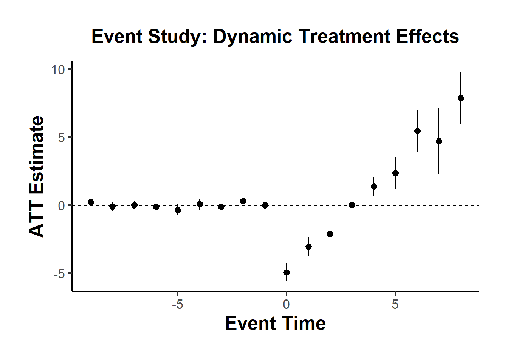
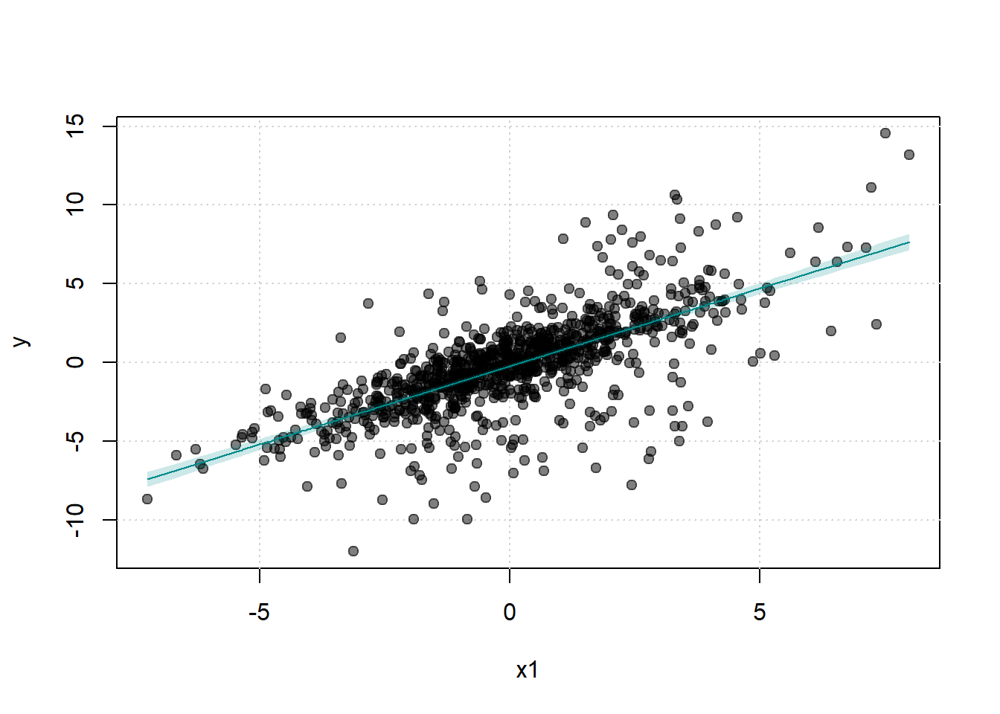
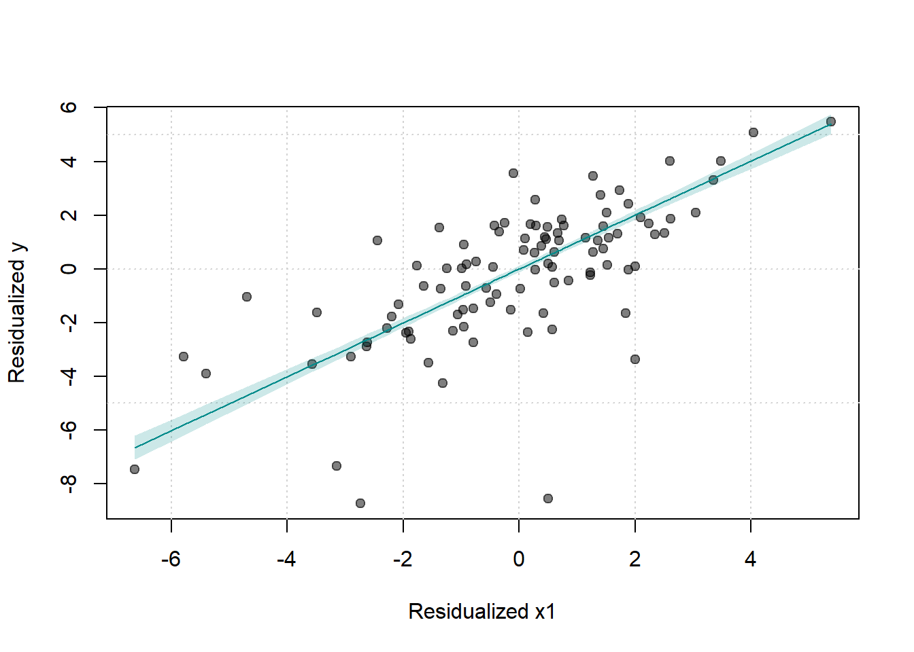
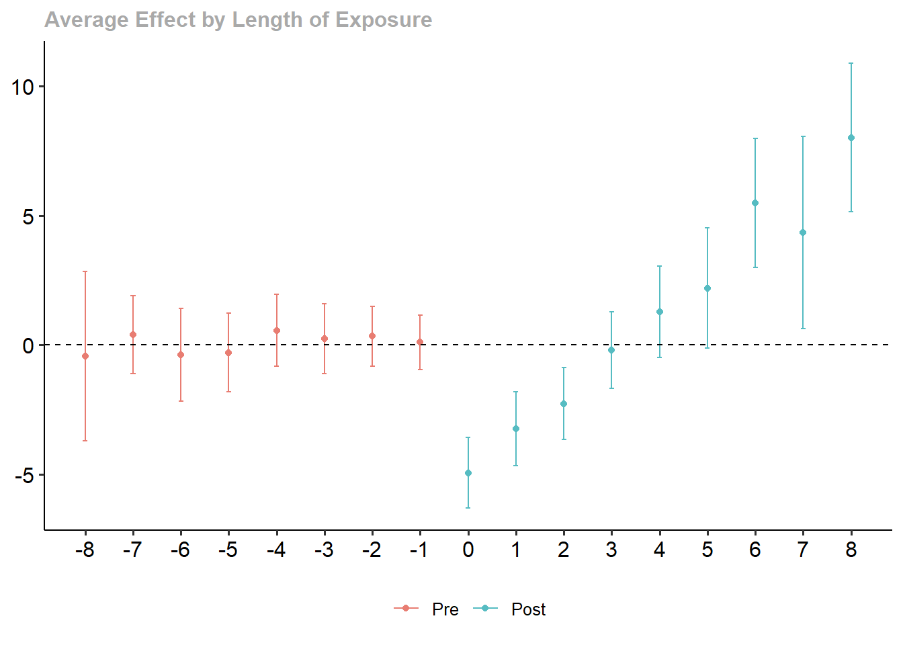

30.8 Modern Estimators for Staggered Adoption
30.8.1 Group-Time Average Treatment Effects (Callaway and Sant’Anna 2021)
Notation Recap
\(Y_{it}(0)\): Potential outcome for unit \(i\) at time \(t\) in the absence of treatment.
\(Y_{it}(g)\): Potential outcome for unit \(i\) at time \(t\) if first treated in period \(g\).
\(Y_{it}\): Observed outcome for unit \(i\) at time \(t\).
\[ Y_{it} = \begin{cases} Y_{it}(0), & \text{if unit } i \text{ never treated ( } C_i = 1 \text{)} \\ 1\{G_i > t\} Y_{it}(0) + 1\{G_i \le t\} Y_{it}(G_i), & \text{otherwise} \end{cases} \]
\(G_i\): Group assignment, i.e., the time period when unit \(i\) first receives treatment.
\(C_i = 1\): Indicator that unit \(i\) never receives treatment (the never-treated group).
\(D_{it} = 1\{G_i \le t\}\): Indicator that unit \(i\) has been treated by time \(t\).
Assumptions
The following assumptions are typically imposed to identify treatment effects in staggered adoption settings.
Staggered Treatment Adoption
Once treated, a unit remains treated in all subsequent periods.
Formally, \(D_{it}\) is non-decreasing in \(t\).Parallel Trends Assumptions (Conditional or Unconditional on Covariates)
Two common variants:
- Parallel trends based on never-treated units: \[
\mathbb{E}[Y_t(0) - Y_{t-1}(0) | G_i = g] = \mathbb{E}[Y_t(0) - Y_{t-1}(0) | C_i = 1]
\] Interpretation:
- The average potential outcome trends of the treated group (\(G_i = g\)) are the same as the never-treated group, absent treatment.
- Parallel trends based on not-yet-treated units: \[
\mathbb{E}[Y_t(0) - Y_{t-1}(0) | G_i = g] = \mathbb{E}[Y_t(0) - Y_{t-1}(0) | D_{is} = 0, G_i \ne g]
\] Interpretation:
- Units not yet treated by time \(s\) (\(D_{is} = 0\)) can serve as controls for units first treated at \(g\).
These assumptions can also be conditional on covariates \(X\), as:
\[ \mathbb{E}[Y_t(0) - Y_{t-1}(0) | X_i, G_i = g] = \mathbb{E}[Y_t(0) - Y_{t-1}(0) | X_i, C_i = 1] \]
- Parallel trends based on never-treated units: \[
\mathbb{E}[Y_t(0) - Y_{t-1}(0) | G_i = g] = \mathbb{E}[Y_t(0) - Y_{t-1}(0) | C_i = 1]
\] Interpretation:
Random Sampling
Units are sampled independently and identically from the population.Irreversibility of Treatment
Once treated, units do not revert to untreated status.Overlap (Positivity)
For each group \(g\), the propensity of receiving treatment at \(g\) lies strictly within \((0, 1)\): \[ 0 < \mathbb{P}(G_i = g | X_i) < 1 \]
The Group-Time ATT, \(ATT(g, t)\), measures the average treatment effect for units first treated in period \(g\), evaluated at time \(t\).
\[ ATT(g, t) = \mathbb{E}[Y_t(g) - Y_t(0) | G_i = g] \]
Interpretation:
\(g\) indexes when the group first receives treatment.
\(t\) is the time period when the effect is evaluated.
\(ATT(g, t)\) captures how treatment effects evolve over time, following adoption at time \(g\).
Identification of \(ATT(g, t)\)
Using Never-Treated Units as Controls: \[ ATT(g, t) = \mathbb{E}[Y_t - Y_{g-1} | G_i = g] - \mathbb{E}[Y_t - Y_{g-1} | C_i = 1], \quad \forall t \ge g \]
Using Not-Yet-Treated Units as Controls: \[ ATT(g, t) = \mathbb{E}[Y_t - Y_{g-1} | G_i = g] - \mathbb{E}[Y_t - Y_{g-1} | D_{it} = 0, G_i \ne g], \quad \forall t \ge g \]
Conditional Parallel Trends (with Covariates):
If treatment assignment depends on covariates \(X_i\), adjust the parallel trends assumption:- Never-treated controls: \[ ATT(g, t) = \mathbb{E}[Y_t - Y_{g-1} | X_i, G_i = g] - \mathbb{E}[Y_t - Y_{g-1} | X_i, C_i = 1], \quad \forall t \ge g \]
- Not-yet-treated controls: \[ ATT(g, t) = \mathbb{E}[Y_t - Y_{g-1} | X_i, G_i = g] - \mathbb{E}[Y_t - Y_{g-1} | X_i, D_{it} = 0, G_i \ne g], \quad \forall t \ge g \]
Aggregating \(ATT(g, t)\): Common Parameters of Interest
Average Treatment Effect per Group (\(\theta_S(g)\)):
Average effect over all periods after treatment for group \(g\): \[ \theta_S(g) = \frac{1}{\tau - g + 1} \sum_{t = g}^{\tau} ATT(g, t) \]- \(\tau\): Last time period in the panel.
Overall Average Treatment Effect on the Treated (ATT) (\(\theta_S^O\)):
Weighted average of \(\theta_S(g)\) across groups \(g\), weighted by their group size: \[ \theta_S^O = \sum_{g=2}^{\tau} \theta_S(g) \cdot \mathbb{P}(G_i = g) \]Dynamic Treatment Effects (\(\theta_D(e)\)):
Average effect after \(e\) periods of treatment exposure: \[ \theta_D(e) = \sum_{g=2}^{\tau} \mathbb{1}\{g + e \le \tau\} \cdot ATT(g, g + e) \cdot \mathbb{P}(G_i = g | g + e \le \tau) \]Calendar Time Treatment Effects (\(\theta_C(t)\)):
Average treatment effect at time \(t\) across all groups treated by \(t\): \[ \theta_C(t) = \sum_{g=2}^{\tau} \mathbb{1}\{g \le t\} \cdot ATT(g, t) \cdot \mathbb{P}(G_i = g | g \le t) \]Average Calendar Time Treatment Effect (\(\theta_C\)):
Average of \(\theta_C(t)\) across all post-treatment periods: \[ \theta_C = \frac{1}{\tau - 1} \sum_{t=2}^{\tau} \theta_C(t) \]
The staggered() function offers several estimands, each defining a different way of aggregating group-time average treatment effects into a single overall treatment effect:
Simple: Equally weighted across all groups.
Cohort: Weighted by group sizes (i.e., treated cohorts).
Calendar: Weighted by the number of observations in each calendar time.
library(staggered)
library(fixest)
data("base_stagg")
# Simple weighted average ATT
staggered(
df = base_stagg,
i = "id",
t = "year",
g = "year_treated",
y = "y",
estimand = "simple"
)
#> estimate se se_neyman
#> 1 -0.7110941 0.2211943 0.2214245
# Cohort weighted ATT (i.e., by treatment cohort size)
staggered(
df = base_stagg,
i = "id",
t = "year",
g = "year_treated",
y = "y",
estimand = "cohort"
)
#> estimate se se_neyman
#> 1 -2.724242 0.2701093 0.2701745
# Calendar weighted ATT (i.e., by year)
staggered(
df = base_stagg,
i = "id",
t = "year",
g = "year_treated",
y = "y",
estimand = "calendar"
)
#> estimate se se_neyman
#> 1 -0.5861831 0.1768297 0.1770729To visualize treatment dynamics around the time of adoption, the event study specification estimates dynamic treatment effects relative to the time of treatment.
res <- staggered(
df = base_stagg,
i = "id",
t = "year",
g = "year_treated",
y = "y",
estimand = "eventstudy",
eventTime = -9:8
)
# Plotting the event study with pointwise confidence intervals
library(ggplot2)
library(dplyr)
ggplot(
res |> mutate(
ymin_ptwise = estimate - 1.96 * se,
ymax_ptwise = estimate + 1.96 * se
),
aes(x = eventTime, y = estimate)
) +
geom_pointrange(aes(ymin = ymin_ptwise, ymax = ymax_ptwise)) +
geom_hline(yintercept = 0, linetype = "dashed") +
xlab("Event Time") +
ylab("ATT Estimate") +
ggtitle("Event Study: Dynamic Treatment Effects") +
causalverse::ama_theme()
The staggered package also includes direct implementations of alternative estimators:
staggered_cs()implements the Callaway and Sant’Anna (2021) estimator.staggered_sa()implements the L. Sun and Abraham (2021) estimator, which adjusts for bias from comparisons involving already-treated units.
# Callaway and Sant’Anna estimator
staggered_cs(
df = base_stagg,
i = "id",
t = "year",
g = "year_treated",
y = "y",
estimand = "simple"
)
#> estimate se se_neyman
#> 1 -0.7994889 0.4484987 0.4486122
# Sun and Abraham estimator
staggered_sa(
df = base_stagg,
i = "id",
t = "year",
g = "year_treated",
y = "y",
estimand = "simple"
)
#> estimate se se_neyman
#> 1 -0.7551901 0.4407818 0.4409525To assess statistical significance under the sharp null hypothesis \(H_0: \text{TE} = 0\), the staggered package includes an option for Fisher’s randomization (permutation) test. This approach tests whether the observed estimate could plausibly occur under a random reallocation of treatment timings.
# Fisher Randomization Test
staggered(
df = base_stagg,
i = "id",
t = "year",
g = "year_treated",
y = "y",
estimand = "simple",
compute_fisher = TRUE,
num_fisher_permutations = 100
)
#> estimate se se_neyman fisher_pval fisher_pval_se_neyman
#> 1 -0.7110941 0.2211943 0.2214245 0 0
#> num_fisher_permutations
#> 1 100This test provides a non-parametric method for inference and is particularly useful when the number of groups is small or standard errors are unreliable due to clustering or heteroskedasticity.
30.8.2 Cohort Average Treatment Effects (L. Sun and Abraham 2021)
L. Sun and Abraham (2021) propose a solution to the TWFE problem in staggered adoption settings by introducing an interaction-weighted estimator for dynamic treatment effects. This estimator is based on the concept of Cohort Average Treatment Effects on the Treated (CATT), which accounts for variation in treatment timing and dynamic treatment responses.
Traditional TWFE estimators implicitly assume homogeneous treatment effects and often rely on treated units serving as controls for later-treated units. When treatment effects vary over time or across groups, this leads to contaminated comparisons, especially in event-study specifications.
L. Sun and Abraham (2021) address this issue by:
Estimating cohort-specific treatment effects relative to time since treatment.
Using never-treated units as controls, or in their absence, the last-treated cohort.
30.8.2.1 Defining the Parameter of Interest: CATT
Let \(E_i = e\) denote the period when unit \(i\) first receives treatment. The cohort-specific average treatment effect on the treated (CATT) is defined as: \[ CATT_{e, l} = \mathbb{E}[Y_{i, e + l} - Y_{i, e + l}^\infty \mid E_i = e] \] Where:
\(l\) is the relative period (e.g., \(l = -1\) is one year before treatment, \(l = 0\) is the treatment year).
\(Y_{i, e + l}^\infty\) is the potential outcome without treatment.
\(Y_{i, e + l}\) is the observed outcome.
This formulation allows one to trace out the dynamic effect of treatment for each cohort, relative to their treatment start time.
L. Sun and Abraham (2021) extend the interaction-weighted idea to panel settings, originally introduced by Gibbons, Suárez Serrato, and Urbancic (2018) in a cross-sectional context.
They propose regressing the outcome on:
Relative time indicators constructed by interacting treatment cohort (\(E_i\)) with time (\(t\)).
Unit and time fixed effects.
This method explicitly estimates \(CATT_{e, l}\) terms, avoiding the contaminating influence of already-treated units that TWFE models often suffer from.
Relative Period Bin Indicator
\[ D_{it}^l = \mathbb{1}(t - E_i = l) \]
- \(E_i\): The time period when unit \(i\) first receives treatment.
- \(l\): The relative time period—how many periods have passed since treatment began.
- Static Specification
\[ Y_{it} = \alpha_i + \lambda_t + \mu_g \sum_{l \ge 0} D_{it}^l + \epsilon_{it} \]
- \(\alpha_i\): Unit fixed effects.
- \(\lambda_t\): Time fixed effects.
- \(\mu_g\): Effect for group \(g\).
- Excludes periods prior to treatment.
- Dynamic Specification
\[ Y_{it} = \alpha_i + \lambda_t + \sum_{\substack{l = -K \\ l \neq -1}}^{L} \mu_l D_{it}^l + \epsilon_{it} \]
- Includes leads and lags of treatment indicators \(D_{it}^l\).
- Excludes one period (typically \(l = -1\)) to avoid perfect collinearity.
- Tests for pre-treatment parallel trends rely on the leads (\(l < 0\)).
30.8.2.2 Identifying Assumptions
- Parallel Trends
For identification, it is assumed that untreated potential outcomes follow parallel trends across cohorts in the absence of treatment: \[ \mathbb{E}[Y_{it}^\infty - Y_{i, t-1}^\infty \mid E_i = e] = \text{constant across } e \] This allows us to use never-treated or not-yet-treated units as valid counterfactuals.
- No Anticipatory Effects
Treatment should not influence outcomes before it is implemented. That is: \[ CATT_{e, l} = 0 \quad \text{for all } l < 0 \] This ensures that any pre-trends are not driven by behavioral changes in anticipation of treatment.
- Treatment Effect Homogeneity (Optional)
The treatment effect is consistent across cohorts for each relative period. Each adoption cohort should have the same path of treatment effects. In other words, the trajectory of each treatment cohort is similar.
Although L. Sun and Abraham (2021) allow treatment effect heterogeneity, some settings may assume homogeneous effects within cohorts and periods:
Each cohort has the same pattern of response over time.
This is relaxed in their design but assumed in simpler TWFE settings.
30.8.2.3 Comparison to Other Designs
Different DiD designs make distinct assumptions about how treatment effects vary:
| Study | Vary Over Time | Vary Across Cohorts | Notes |
|---|---|---|---|
| L. Sun and Abraham (2021) | ✓ | ✓ | Allows full heterogeneity |
| Callaway and Sant’Anna (2021) | ✓ | ✓ | Estimates group × time ATTs |
| Borusyak, Jaravel, and Spiess (2024) | ✓ | ✗ | Homogeneous across cohorts Heterogeneity over time |
| Athey and Imbens (2022) | ✗ | ✓ | Heterogeneity only across adoption cohorts |
| Clement De Chaisemartin and D’haultfœuille (2023) | ✓ | ✓ | Complete heterogeneity |
| Goodman-Bacon (2021) | ✓ or ✗ | ✗ or ✓ | Restricts one dimension Heterogeneity either “vary across units but not over time” or “vary over time but not across units”. |
30.8.2.4 Sources of Treatment Effect Heterogeneity
Several forces can generate heterogeneous treatment effects:
Calendar Time Effects: Macro events (e.g., recessions, policy changes) affect cohorts differently.
Selection into Timing: Units self-select into early/late treatment based on anticipated effects.
Composition Differences: Adoption cohorts may differ in observed or unobserved ways.
Such heterogeneity can bias TWFE estimates, which often average effects across incomparable groups.
30.8.2.5 Technical Issues
When using an event-study TWFE regression to estimate dynamic treatment effects in staggered adoption settings, one must exclude certain relative time indicators to avoid perfect multicollinearity. This arises because relative period indicators are linearly dependent due to the presence of unit and time fixed effects.
Specifically, the following two terms must be addressed:
The period immediately before treatment (\(l = -1\)): This period is typically omitted and serves as the baseline for comparison. This normalization has been standard practice in event study regressions prior to L. Sun and Abraham (2021) .
A distant post-treatment period (e.g., \(l = +5\) or \(l = +10\)): L. Sun and Abraham (2021) clarified that in addition to the baseline period, at least one other relative time indicator—typically from the far tail of the post-treatment distribution—must be dropped, binned, or trimmed to avoid multicollinearity among the relative time dummies. This issue emerges because fixed effects absorb much of the within-unit and within-time variation, reducing the effective rank of the design matrix.
Dropping certain relative periods (especially pre-treatment periods) introduces an implicit normalization: the estimates for included periods are now interpreted relative to the omitted periods. If treatment effects are present in these omitted periods—say, due to anticipation or early effects—this will contaminate the estimates of included relative periods.
To avoid this contamination, researchers often assume that all pre-treatment periods have zero treatment effect, i.e.,
\[ CATT_{e, l} = 0 \quad \text{for all } l < 0 \]
This assumption ensures that excluded pre-treatment periods form a valid counterfactual, and estimates for \(l \geq 0\) are not biased due to normalization.
L. Sun and Abraham (2021) resolve the issues of weighting and aggregation by using a clean weighting scheme that avoids contamination from excluded periods. Their method produces a weighted average of cohort- and time-specific treatment effects (\(CATT_{e, l}\)), where the weights are:
- Non-negative
- Sum to one
- Interpretable as the fraction of treated units who are observed \(l\) periods after treatment, normalized over the number of available periods \(g\)
This interaction-weighted estimator ensures that the estimated average treatment effect reflects a convex combination of dynamic treatment effects from different cohorts and times.
In this way, their aggregation logic closely mirrors that of Callaway and Sant’Anna (2021), who also construct average treatment effects from group-time ATTs using interpretable weights that align with the sampling structure.
library(fixest)
data("base_stagg")
# Estimate Sun & Abraham interaction-weighted model
res_sa20 <- feols(
y ~ x1 + sunab(year_treated, year) | id + year,
data = base_stagg
)Use iplot() to visualize the estimated dynamic treatment effects across relative time:

You can summarize the results using different aggregation options:
# Overall average ATT
summary(res_sa20, agg = "att")
#> OLS estimation, Dep. Var.: y
#> Observations: 950
#> Fixed-effects: id: 95, year: 10
#> Standard-errors: Clustered (id)
#> Estimate Std. Error t value Pr(>|t|)
#> x1 0.994678 0.018378 54.12293 < 2.2e-16 ***
#> ATT -1.133749 0.205070 -5.52858 2.882e-07 ***
#> ---
#> Signif. codes: 0 '***' 0.001 '**' 0.01 '*' 0.05 '.' 0.1 ' ' 1
#> RMSE: 0.921817 Adj. R2: 0.887984
#> Within R2: 0.876406
# Aggregation across post-treatment periods (excluding leads)
summary(res_sa20, agg = c("att" = "year::[^-]"))
#> OLS estimation, Dep. Var.: y
#> Observations: 950
#> Fixed-effects: id: 95, year: 10
#> Standard-errors: Clustered (id)
#> Estimate Std. Error t value Pr(>|t|)
#> x1 0.994678 0.018378 54.122928 < 2.2e-16 ***
#> year::-9:cohort::10 0.351766 0.359073 0.979649 3.2977e-01
#> year::-8:cohort::9 0.033914 0.471437 0.071937 9.4281e-01
#> year::-8:cohort::10 -0.191932 0.352896 -0.543876 5.8781e-01
#> year::-7:cohort::8 -0.589387 0.736910 -0.799809 4.2584e-01
#> year::-7:cohort::9 0.872995 0.493427 1.769249 8.0096e-02 .
#> year::-7:cohort::10 0.019512 0.603411 0.032336 9.7427e-01
#> year::-6:cohort::7 -0.042147 0.865736 -0.048683 9.6127e-01
#> year::-6:cohort::8 -0.657571 0.573257 -1.147078 2.5426e-01
#> year::-6:cohort::9 0.877743 0.533331 1.645775 1.0315e-01
#> year::-6:cohort::10 -0.403635 0.347412 -1.161832 2.4825e-01
#> year::-5:cohort::6 -0.658034 0.913407 -0.720418 4.7306e-01
#> year::-5:cohort::7 -0.316974 0.697939 -0.454158 6.5076e-01
#> year::-5:cohort::8 -0.238213 0.469744 -0.507113 6.1326e-01
#> year::-5:cohort::9 0.301477 0.604201 0.498968 6.1897e-01
#> year::-5:cohort::10 -0.564801 0.463214 -1.219308 2.2578e-01
#> year::-4:cohort::5 -0.983453 0.634492 -1.549984 1.2451e-01
#> year::-4:cohort::6 0.360407 0.858316 0.419900 6.7552e-01
#> year::-4:cohort::7 -0.430610 0.661356 -0.651102 5.1657e-01
#> year::-4:cohort::8 -0.895195 0.374901 -2.387816 1.8949e-02 *
#> year::-4:cohort::9 -0.392478 0.439547 -0.892914 3.7418e-01
#> year::-4:cohort::10 0.519001 0.597880 0.868069 3.8757e-01
#> year::-3:cohort::4 0.591288 0.680169 0.869324 3.8688e-01
#> year::-3:cohort::5 -1.000650 0.971741 -1.029749 3.0577e-01
#> year::-3:cohort::6 0.072188 0.652641 0.110609 9.1216e-01
#> year::-3:cohort::7 -0.836820 0.804275 -1.040465 3.0079e-01
#> year::-3:cohort::8 -0.783148 0.701312 -1.116691 2.6697e-01
#> year::-3:cohort::9 0.811285 0.564470 1.437251 1.5397e-01
#> year::-3:cohort::10 0.527203 0.320051 1.647250 1.0285e-01
#> year::-2:cohort::3 0.036941 0.673771 0.054828 9.5639e-01
#> year::-2:cohort::4 0.832250 0.859544 0.968246 3.3541e-01
#> year::-2:cohort::5 -1.574086 0.525563 -2.995051 3.5076e-03 **
#> year::-2:cohort::6 0.311758 0.832095 0.374666 7.0875e-01
#> year::-2:cohort::7 -0.558631 0.871993 -0.640638 5.2332e-01
#> year::-2:cohort::8 0.429591 0.305270 1.407250 1.6265e-01
#> year::-2:cohort::9 1.201899 0.819186 1.467188 1.4566e-01
#> year::-2:cohort::10 -0.002429 0.682087 -0.003562 9.9717e-01
#> att -1.133749 0.205070 -5.528584 2.8820e-07 ***
#> ---
#> Signif. codes: 0 '***' 0.001 '**' 0.01 '*' 0.05 '.' 0.1 ' ' 1
#> RMSE: 0.921817 Adj. R2: 0.887984
#> Within R2: 0.876406
# Aggregate post-treatment effects from l = 0 to 8
summary(res_sa20, agg = c("att" = "year::[012345678]")) |>
etable(digits = 2)
#> summary(res_..
#> Dependent Var.: y
#>
#> x1 0.99*** (0.02)
#> year = -9 x cohort = 10 0.35 (0.36)
#> year = -8 x cohort = 9 0.03 (0.47)
#> year = -8 x cohort = 10 -0.19 (0.35)
#> year = -7 x cohort = 8 -0.59 (0.74)
#> year = -7 x cohort = 9 0.87. (0.49)
#> year = -7 x cohort = 10 0.02 (0.60)
#> year = -6 x cohort = 7 -0.04 (0.87)
#> year = -6 x cohort = 8 -0.66 (0.57)
#> year = -6 x cohort = 9 0.88 (0.53)
#> year = -6 x cohort = 10 -0.40 (0.35)
#> year = -5 x cohort = 6 -0.66 (0.91)
#> year = -5 x cohort = 7 -0.32 (0.70)
#> year = -5 x cohort = 8 -0.24 (0.47)
#> year = -5 x cohort = 9 0.30 (0.60)
#> year = -5 x cohort = 10 -0.56 (0.46)
#> year = -4 x cohort = 5 -0.98 (0.63)
#> year = -4 x cohort = 6 0.36 (0.86)
#> year = -4 x cohort = 7 -0.43 (0.66)
#> year = -4 x cohort = 8 -0.90* (0.37)
#> year = -4 x cohort = 9 -0.39 (0.44)
#> year = -4 x cohort = 10 0.52 (0.60)
#> year = -3 x cohort = 4 0.59 (0.68)
#> year = -3 x cohort = 5 -1.0 (0.97)
#> year = -3 x cohort = 6 0.07 (0.65)
#> year = -3 x cohort = 7 -0.84 (0.80)
#> year = -3 x cohort = 8 -0.78 (0.70)
#> year = -3 x cohort = 9 0.81 (0.56)
#> year = -3 x cohort = 10 0.53 (0.32)
#> year = -2 x cohort = 3 0.04 (0.67)
#> year = -2 x cohort = 4 0.83 (0.86)
#> year = -2 x cohort = 5 -1.6** (0.53)
#> year = -2 x cohort = 6 0.31 (0.83)
#> year = -2 x cohort = 7 -0.56 (0.87)
#> year = -2 x cohort = 8 0.43 (0.31)
#> year = -2 x cohort = 9 1.2 (0.82)
#> year = -2 x cohort = 10 -0.002 (0.68)
#> att -1.1*** (0.21)
#> Fixed-Effects: --------------
#> id Yes
#> year Yes
#> _______________________ ______________
#> S.E.: Clustered by: id
#> Observations 950
#> R2 0.90982
#> Within R2 0.87641
#> ---
#> Signif. codes: 0 '***' 0.001 '**' 0.01 '*' 0.05 '.' 0.1 ' ' 1The fwlplot package provides diagnostics for how much variation is explained by fixed effects or covariates:


# Splitting by treatment status
fwl_plot(
y ~ x1 |
id + year,
data = base_stagg,
n_sample = 100,
fsplit = ~ treated
)
30.8.3 Stacked Difference-in-Differences
The Stacked DiD approach addresses key limitations of standard TWFE models in staggered adoption designs, particularly treatment effect heterogeneity and timing variations. By constructing sub-experiments around each treatment event, researchers can isolate cleaner comparisons and reduce contamination from improperly specified control groups.
Basic TWFE Specification
\[ Y_{it} = \beta_{FE} D_{it} + A_i + B_t + \epsilon_{it} \]
- \(Y_{it}\): Outcome for unit \(i\) at time \(t\).
- \(D_{it}\): Treatment indicator (1 if treated, 0 otherwise).
- \(A_i\): Unit (group) fixed effects.
- \(B_t\): Time period fixed effects.
- \(\epsilon_{it}\): Idiosyncratic error term.
Steps in the Stacked DiD Procedure
30.8.3.1 Choose an Event Window
Define:
- \(\kappa_a\): Number of pre-treatment periods to include in the event window (lead periods).
- \(\kappa_b\): Number of post-treatment periods to include in the event window (lag periods).
Implication:
Only events where sufficient pre- and post-treatment periods exist will be included (i.e., excluding those events that do not meet this criteria).
30.8.3.2 Enumerate Sub-Experiments
Define:
- \(T_1\): First period in the panel.
- \(T_T\): Last period in the panel.
- \(\Omega_A\): The set of treatment adoption periods that fit within the event window:
\[ \Omega_A = \left\{ A_i \;\middle|\; T_1 + \kappa_a \le A_i \le T_T - \kappa_b \right\} \]
- Each \(A_i\) represents an adoption period for unit \(i\) that has enough time on both sides of the event.
Let \(d = 1, \dots, D\) index the sub-experiments in \(\Omega_A\).
- \(\omega_d\): The event (adoption) date of the \(d\)-th sub-experiment.
30.8.3.3 Define Inclusion Criteria
Valid Treated Units
- In sub-experiment \(d\), treated units have adoption date exactly equal to \(\omega_d\).
- A unit may only be treated in one sub-experiment to avoid duplication.
Clean Control Units
- Controls are units where \(A_i > \omega_d + \kappa_b\), i.e.,
- They are never treated, or
- They are treated in the far future (beyond the post-event window).
- A control unit can appear in multiple sub-experiments, but this requires correcting standard errors (see below).
Valid Time Periods
- Only observations where
\[ \omega_d - \kappa_a \le t \le \omega_d + \kappa_b \]
are included. - This ensures the analysis is centered on the event window.
30.8.3.4 Specify Estimating Equation
Basic DiD Specification in the Stacked Dataset
\[ Y_{itd} = \beta_0 + \beta_1 T_{id} + \beta_2 P_{td} + \beta_3 (T_{id} \times P_{td}) + \epsilon_{itd} \]
Where:
\(i\): Unit index
\(t\): Time index
\(d\): Sub-experiment index
\(T_{id}\): Indicator for treated units in sub-experiment \(d\)
\(P_{td}\): Indicator for post-treatment periods in sub-experiment \(d\)
\(\beta_3\): Captures the DiD estimate of the treatment effect.
Equivalent Form with Fixed Effects
\[ Y_{itd} = \beta_3 (T_{id} \times P_{td}) + \theta_{id} + \gamma_{td} + \epsilon_{itd} \]
where
\(\theta_{id}\): Unit-by-sub-experiment fixed effect.
\(\gamma_{td}\): Time-by-sub-experiment fixed effect.
Note:
- \(\beta_3\) summarizes the average treatment effect across all sub-experiments but does not allow for dynamic effects by time since treatment.
30.8.3.5 Stacked Event Study Specification
Define Time Since Event (\(YSE_{td}\)):
\[ YSE_{td} = t- \omega_d \]
where
Measures time since the event (relative time) in sub-experiment \(d\).
\(YSE_{td} \in [-\kappa_a, \dots, 0, \dots, \kappa_b]\) in every sub-experiment.
Event-Study Regression (Sub-Experiment Level)
\[ Y_{it}^d = \sum_{j = -\kappa_a}^{\kappa_b} \beta_j^d . 1 (YSE_{td} = j) + \sum_{j = -\kappa_a}^{\kappa_b} \delta_j^d (T_{id} . 1 (YSE_{td} = j)) + \theta_i^d + \epsilon_{it}^d \]
where
Separate coefficients for each sub-experiment \(d\).
\(\delta_j^d\): Captures treatment effects at relative time \(j\) within sub-experiment \(d\).
Pooled Stacked Event-Study Regression
\[ Y_{itd} = \sum_{j = -\kappa_a}^{\kappa_b} \beta_j \cdot \mathbb{1}(YSE_{td} = j) + \sum_{j = -\kappa_a}^{\kappa_b} \delta_j \left( T_{id} \cdot \mathbb{1}(YSE_{td} = j) \right) + \theta_{id} + \epsilon_{itd} \]
- Pooled coefficients \(\delta_j\) reflect average treatment effects by event time \(j\) across sub-experiments.
30.8.3.6 Clustering in Stacked DID
Cluster at Unit × Sub-Experiment Level (Cengiz et al. 2019): Accounts for units appearing multiple times across sub-experiments.
Cluster at Unit Level (Deshpande and Li 2019): Appropriate when units are uniquely identified and do not appear in multiple sub-experiments.
library(did)
library(tidyverse)
library(fixest)
# Load example data
data(base_stagg)
# Get treated cohorts (exclude never-treated units coded as 10000)
cohorts <- base_stagg %>%
filter(year_treated != 10000) %>%
distinct(year_treated) %>%
pull()
# Function to generate data for each sub-experiment
getdata <- function(j, window) {
base_stagg %>%
filter(
year_treated == j | # treated units in cohort j
year_treated > j + window # controls not treated soon after
) %>%
filter(
year >= j - window &
year <= j + window # event window bounds
) %>%
mutate(df = j) # sub-experiment indicator
}
# Generate the stacked dataset
stacked_data <- map_df(cohorts, ~ getdata(., window = 5)) %>%
mutate(
rel_year = if_else(df == year_treated, time_to_treatment, NA_real_)
) %>%
fastDummies::dummy_cols("rel_year", ignore_na = TRUE) %>%
mutate(across(starts_with("rel_year_"), ~ replace_na(., 0)))
# Estimate fixed effects regression on the stacked data
stacked_result <- feols(
y ~ `rel_year_-5` + `rel_year_-4` + `rel_year_-3` + `rel_year_-2` +
rel_year_0 + rel_year_1 + rel_year_2 + rel_year_3 +
rel_year_4 + rel_year_5 |
id ^ df + year ^ df,
data = stacked_data
)
# Extract coefficients and standard errors
stacked_coeffs <- stacked_result$coefficients
stacked_se <- stacked_result$se
# Insert zero for the omitted period (usually -1)
stacked_coeffs <- c(stacked_coeffs[1:4], 0, stacked_coeffs[5:10])
stacked_se <- c(stacked_se[1:4], 0, stacked_se[5:10])# Plotting estimates from three methods: Callaway & Sant'Anna, Sun & Abraham, and Stacked DiD
cs_out <- att_gt(
yname = "y",
data = base_stagg,
gname = "year_treated",
idname = "id",
# xformla = "~x1",
tname = "year"
)
cs <-
aggte(
cs_out,
type = "dynamic",
min_e = -5,
max_e = 5,
bstrap = FALSE,
cband = FALSE
)
res_sa20 = feols(y ~ sunab(year_treated, year) |
id + year, base_stagg)
sa = tidy(res_sa20)[5:14, ] %>% pull(estimate)
sa = c(sa[1:4], 0, sa[5:10])
sa_se = tidy(res_sa20)[6:15, ] %>% pull(std.error)
sa_se = c(sa_se[1:4], 0, sa_se[5:10])
compare_df_est = data.frame(
period = -5:5,
cs = cs$att.egt,
sa = sa,
stacked = stacked_coeffs
)
compare_df_se = data.frame(
period = -5:5,
cs = cs$se.egt,
sa = sa_se,
stacked = stacked_se
)
compare_df_longer <- compare_df_est %>%
pivot_longer(!period, names_to = "estimator", values_to = "est") %>%
full_join(compare_df_se %>%
pivot_longer(!period, names_to = "estimator", values_to = "se")) %>%
mutate(upper = est + 1.96 * se,
lower = est - 1.96 * se)
ggplot(compare_df_longer) +
geom_ribbon(aes(
x = period,
ymin = lower,
ymax = upper,
group = estimator
), alpha = 0.2) +
geom_line(aes(
x = period,
y = est,
group = estimator,
color = estimator
),
linewidth = 1.2) +
labs(
title = "Comparison of Dynamic Treatment Effects",
x = "Event Time (Periods since Treatment)",
y = "Estimated ATT",
color = "Estimator"
) +
causalverse::ama_theme()
30.8.4 Panel Match DiD Estimator with In-and-Out Treatment Conditions
As noted in Imai and Kim (2021), the TWFE regression model is widely used but fundamentally relies on strong modeling assumptions, particularly linearity and additivity. It does not constitute a fully nonparametric estimation method and may yield biased results under model misspecification.
30.8.4.1 Limitations of TWFE
Researchers often prefer TWFE due to its ability to control for both unit- and time-specific unobserved confounders:
- \(\alpha_i = h(\mathbf{U}_i)\) accounts for unit-level confounders.
- \(\gamma_t = f(\mathbf{V}_t)\) adjusts for time-level confounders.
The functional forms \(h(\cdot)\) and \(f(\cdot)\) are left unspecified, but additivity and separability are assumed. TWFE is based on the model:
\[ Y_{it} = \alpha_i + \gamma_t + \beta X_{it} + \epsilon_{it} \]
for \(i = 1, \dots, N\), and \(t = 1, \dots, T\). However, this formulation requires a linear specification for the treatment effect \(\beta\). Contrary to popular belief, the model does require functional form assumptions for validity (Imai and Kim 2021, 406; 2019).
30.8.4.2 Matching and the Panel Match DiD Estimator
To mitigate model dependence and improve causal inference validity, Imai and Kim (2021) propose a matching-based framework for panel data. This method is implemented via the wfe and PanelMatch R packages and offers design-based identification under relaxed assumptions.
This setting generalizes staggered adoption, allowing units to transition in and out of treatment. The core idea is to construct matched control groups that share the same treatment history as treated units and then apply a Difference-in-Differences logic. This is better than synthetic controls (e.g., Xu (2017)) because it requires less data to achieve good performance and can adapt to contexts where units switch treatment status multiple times.
Key Properties of PM-DiD (Imai, Kim, and Wang 2021)
- Designed for multiple treatment switches over time.
- Addresses issues of carryover, reversal, and attenuation bias.
- Allows estimation of short-term and long-term causal effects, accounting for time dynamics.
Key Findings (Imai, Kim, and Wang 2021)
Even under favorable conditions for OLS, PM-DiD is more robust to model misspecification and omitted lags.
This robustness comes with a cost: reduced efficiency (larger variance).
Reflects the classic bias-variance tradeoff between flexible and parametric estimators.
Data and Software Requirements
Treatment variable: binary (0 = control, 1 = treated).
Unit and time variables: integer/numeric and ordered.
Input data must be in
data.frameformat.
Examples:
30.8.4.3 Two-Way Matching Interpretation of TWFE
The least squares estimate of \(\beta\) in the TWFE model can be re-expressed as a matching estimator that compares each treated unit to observations within:
- The same unit (within-unit match),
- The same time period (within-time match),
- Adjusted by a third set of observations in neither group.
This leads to mismatches—treated observations compared to units with the same treatment status, which causes attenuation bias.
The adjustment factor \(K\) corrects for this by weighting matches appropriately. However, even the weighted TWFE estimator contains some mismatches and relies on comparisons across units that differ in key characteristics.
In the simple two-period, two-group DiD setting, the TWFE and DiD estimators coincide. However, in multi-period DiD with treatment reversals, this equivalence breaks down (Imai and Kim 2021).
- The unweighted TWFE is not equivalent to multi-period DiD.
- The multi-period DiD is equivalent to a weighted TWFE, but some weights are negative—a problematic feature from a design-based perspective.
This means that justifying TWFE via DiD logic is incorrect unless the linearity assumption is satisfied.
30.8.4.4 Estimation Using Panel Match DiD
Core Estimation Steps (Imai, Kim, and Wang 2021):
- Match treated observations with control observations from the same time period and with identical treatment histories over the past \(L\) periods.
- Use standard matching or weighting methods to refine control sets (e.g., Mahalanobis distance, propensity score).
- Apply a DiD estimator to compute treatment effects at time \(t + F\).
- Evaluate match quality using covariate balance diagnostics (Ho et al. 2007).
Causal Estimand
Let \(F\) be the number of leads (future periods) and \(L\) be the number of lags (past treatment periods). Define the average treatment effect as:
\[ \delta(F, L) = \mathbb{E}\left[Y_{i, t+F}(1) - Y_{i, t+F}(0) \mid \text{treatment history from } t-L \text{ to } t\right] \]
- \(F = 0\): contemporaneous effect (short-run ATT)
- \(F > 0\): future outcomes (long-run ATT)
- \(L\): adjusts for potential carryover effects
The estimator also allows for estimation of the Average Reversal Treatment Effect (ART) when treatment status switches from 1 to 0.
30.8.4.5 Model Assumptions
No spillover effects across units (i.e., SUTVA holds)
Carryover effects allowed up to \(L\) periods.
After \(L\) lags, prior treatments are assumed to have no effect on \(Y_{i,t+F}\).
The potential outcome at \(t + F\) is independent of treatment assignments beyond \(t - L\).
The key identifying assumption is a conditional parallel trends assumption. Outcome trends are assumed parallel across treated and matched control units, conditional on:
Past treatment,
Covariate histories,
Lagged outcomes (excluding the most recent).
Unlike standard TWFE, strong ignorability is not required.
30.8.4.6 Covariate Balance Assessment
Assessing balance before estimating ATT is critical:
- Compute the mean standardized difference between treated and matched control units.
- Check balance across covariates and lagged outcomes for all \(L\) pretreatment periods.
- Imbalanced covariates may indicate violations of the parallel trends assumption.
30.8.4.7 Implementing the Panel Match DiD Estimator
Treatment Variation Plot
Visualizing the variation of treatment across space and time is essential to assess whether the treatment has sufficient heterogeneity to support credible causal identification.
DisplayTreatment(
panel.data = PanelData(
panel.data = dem,
unit.id = "wbcode2",
time.id = "year",
treatment = "dem",
outcome = "y"
),
legend.position = "none",
xlab = "year",
ylab = "Country Code"
)
This plot aids in identifying whether the treatment is broadly distributed or concentrated among a few units or time periods.
Insufficient treatment variation may weaken identification or reduce the precision of estimated effects.
30.8.4.7.1 Setting Parameters \(F\) and \(L\)
- Select \(F\): the number of leads, or time periods after treatment, for which the effect is measured.
\(F = 0\): contemporaneous (short-term) treatment effect.
\(F > 0\): long-term or cumulative effects.
- Select \(L\): the number of lags (prior treatment periods) used in matching to adjust for carryover effects.
Increasing \(L\) enhances credibility but reduces match quality and sample size.
This selection reflects the bias-variance tradeoff.
30.8.4.7.2 Causal Quantity of Interest
The ATT is defined as:
\[ \delta(F, L) = \mathbb{E} \left[ Y_{i,t+F}(1) - Y_{i,t+F}(0) \mid X_{i,t} = 1, \text{History}_{i,t-L:t-1} \right] \]
This estimator accounts for carryover history (via \(L\)) and post-treatment dynamics (via \(F\)).
It is also robust to treatment reversals, i.e., treatment switching back to control.
A related estimand, the Average Reversal Treatment Effect (ART), measures the causal effect of switching from treatment to control.
30.8.4.7.3 Choosing \(F\) and \(L\)
Large \(L\):
Improves identification of causal effect by accounting for long-term treatment confounding.
Reduces sample size due to stricter matching requirements.
Large \(F\):
Enables analysis of delayed effects.
Complicates interpretation if units switch treatment again before \(t + F\).
Researchers should select \(F\) and \(L\) based on substantive context, theoretical considerations, and sensitivity analysis.
30.8.4.7.4 Constructing and Refining Matched Sets
- Initial Matching
Each treated observation is matched to control units from other units in the same time period.
Matching is based on exact treatment histories from \(t - L\) to \(t - 1\).
Purpose
Controls for carryover effects.
Ensures matched units have similar latent propensities for treatment.
- Refinement Process
Refined matched sets additionally adjust for pre-treatment covariates and lagged outcomes.
Matching strategies:
Mahalanobis distance.
Propensity score.
- Up to \(J\) best matches per treated unit may be used.
- Weighting
Assigns weights to matched controls to emphasize similarity.
Weighting is often done via inverse propensity scores, or other balance-enhancing metrics.
Can be considered a generalization of traditional matching.
30.8.4.7.5 Difference-in-Differences Estimation
Once matched sets are constructed:
The counterfactual for each treated unit is a weighted average of outcomes from its matched control set.
The DiD estimate of ATT is:
\[ \widehat{\delta}_{\text{ATT}} = \frac{1}{|T_1|} \sum_{(i,t) \in T_1} \left[ Y_{i,t+F} - \sum_{j \in \mathcal{C}_{it}} w_{ijt} Y_{j,t+F} \right] \]
where \(T_1\) is the set of treated observations, \(\mathcal{C}_{it}\) is the matched control set, and \(w_{ijt}\) are normalized weights.
Considerations when \(F > 0\):
Matched controls may themselves switch into treatment before \(t + F\).
Some treated units may revert to control.
30.8.4.7.6 Checking Covariate Balance
One of the main advantages of matching-based estimators is the ability to diagnose balance:
- For each covariate and each lag, compute:
\[ \text{Standardized Difference} = \frac{\bar{X}_{\text{treated}} - \bar{X}_{\text{control}}}{\text{SD}_{\text{treated}}} \]
Aggregate these over all treated observations and time periods.
Examine balance on:
Time-varying covariates,
Lagged outcomes,
Baseline covariates
Balance checks provide indirect validation of the parallel trends assumption.
30.8.4.7.7 Standard Error Estimation
Analogous to the conditional variance seen in regression models.
Standard errors are calculated conditional on the matching weights (G. W. Imbens and Rubin 2015).
SE here is a measure of sampling uncertainty given the matched design.
Note: They do not incorporate uncertainty from the matching procedure itself (Ho et al. 2007).
30.8.4.7.8 Matching on Treatment History
The goal is to compare treated units transitioning into treatment to control units with comparable treatment histories.
Set
qoi =:"att": Average Treatment on the Treated,"atc": Average Treatment on the Controls,"art": Average Reversal Treatment Effect,"ate": Average Treatment Effect.
library(PanelMatch)
# All examples follow the package's vignette
# Create the matched sets
PM.results.none <-
PanelMatch(
lag = 4,
refinement.method = "none",
panel.data = PanelData(panel.data = dem,
unit.id = "wbcode2",
time.id = "year",
treatment = "dem",
outcome = "y"),
match.missing = TRUE,
size.match = 5,
qoi = "att",
lead = 0:4,
forbid.treatment.reversal = FALSE,
use.diagonal.variance.matrix = TRUE
)
# visualize the treated unit and matched controls
DisplayTreatment(
legend.position = "none",
xlab = "year",
ylab = "Country Code",
panel.data = PanelData(panel.data = dem,
unit.id = "wbcode2",
time.id = "year",
treatment = "dem",
outcome = "y"),
matched.set = PM.results.none$att[1],
# highlight the particular set
show.set.only = TRUE
)
Control units and the treated unit have identical treatment histories over the lag window (1988-1991)
DisplayTreatment(
legend.position = "none",
xlab = "year",
ylab = "Country Code",
panel.data = PanelData(panel.data = dem,
unit.id = "wbcode2",
time.id = "year",
treatment = "dem",
outcome = "y"),
matched.set = PM.results.none$att[2],
# highlight the particular set
show.set.only = TRUE
)
This set is more limited than the first one, but we can still see that we have exact past histories.
Refining Matched Sets
Refinement involves assigning weights to control units.
Users must:
Specify a method for calculating unit similarity/distance.
Choose variables for similarity/distance calculations.
Select a Refinement Method
Users determine the refinement method via the
refinement.methodargument.Options include:
mahalanobisps.matchCBPS.matchps.weightCBPS.weightps.msm.weightCBPS.msm.weightnone
Methods with “match” in the name and Mahalanobis will assign equal weights to similar control units.
“Weighting” methods give higher weights to control units more similar to treated units.
Variable Selection
Users need to define which covariates will be used through the
covs.formulaargument, a one-sided formula object.Variables on the right side of the formula are used for calculations.
“Lagged” versions of variables can be included using the format:
I(lag(name.of.var, 0:n)).
Understanding
PanelMatchandmatched.setobjectsThe
PanelMatchfunction returns aPanelMatchobject.The most crucial element within the
PanelMatchobject is the matched.set object.Within the
PanelMatchobject, the matched.set object will have names like att, art, or atc.If
qoi = ate, there will be two matched.set objects: att and atc.
Matched.set Object Details
matched.set is a named list with added attributes.
Attributes include:
Lag
Names of treatment
Unit and time variables
Each list entry represents a matched set of treated and control units.
Naming follows a structure:
[id variable].[time variable].Each list element is a vector of control unit ids that match the treated unit mentioned in the element name.
Since it’s a matching method, weights are only given to the
size.matchmost similar control units based on distance calculations.
# PanelMatch without any refinement
PM.results.none <-
PanelMatch(
lag = 4,
refinement.method = "none",
panel.data = PanelData(panel.data = dem,
unit.id = "wbcode2",
time.id = "year",
treatment = "dem",
outcome = "y"),
match.missing = TRUE,
size.match = 5,
qoi = "att",
lead = 0:4,
forbid.treatment.reversal = FALSE,
use.diagonal.variance.matrix = TRUE
)
# Extract the matched.set object
msets.none <- PM.results.none$att
# PanelMatch with refinement
PM.results.maha <-
PanelMatch(
lag = 4,
refinement.method = "mahalanobis", # use Mahalanobis distance
panel.data = PanelData(panel.data = dem,
unit.id = "wbcode2",
time.id = "year",
treatment = "dem",
outcome = "y"),
match.missing = TRUE,
covs.formula = ~ tradewb,
size.match = 5,
qoi = "att" ,
lead = 0:4,
forbid.treatment.reversal = FALSE,
use.diagonal.variance.matrix = TRUE
)
msets.maha <- PM.results.maha$att# these 2 should be identical because weights are not shown
msets.none |> head()
#> wbcode2 year matched.set.size
#> 1 4 1992 74
#> 2 4 1997 2
#> 3 6 1973 63
#> 4 6 1983 73
#> 5 7 1991 81
#> 6 7 1998 1
msets.maha |> head()
#> wbcode2 year matched.set.size
#> 1 4 1992 74
#> 2 4 1997 2
#> 3 6 1973 63
#> 4 6 1983 73
#> 5 7 1991 81
#> 6 7 1998 1
# summary(msets.none)
# summary(msets.maha)Visualizing Matched Sets with the plot method
Users can visualize the distribution of the matched set sizes.
A red line, by default, indicates the count of matched sets where treated units had no matching control units (i.e., empty matched sets).
Plot adjustments can be made using
graphics::plot.
plot(
msets.none,
panel.data = PanelData(
panel.data = dem,
unit.id = "wbcode2",
time.id = "year",
treatment = "dem",
outcome = "y"
)
)
Comparing Methods of Refinement
Users are encouraged to:
Use substantive knowledge for experimentation and evaluation.
Consider the following when configuring
PanelMatch:The number of matched sets.
The number of controls matched to each treated unit.
Achieving covariate balance.
Note: Large numbers of small matched sets can lead to larger standard errors during the estimation stage.
Covariates that aren’t well balanced can lead to undesirable comparisons between treated and control units.
Aspects to consider include:
Refinement method.
Variables for weight calculation.
Size of the lag window.
Procedures for addressing missing data (refer to
match.missingandlistwise.deletearguments).Maximum size of matched sets (for matching methods).
Supportive Features:
print,plot, andsummarymethods assist in understanding matched sets and their sizes.get_covariate_balancehelps evaluate covariate balance:- Lower values in the covariate balance calculations are preferred.
PM.results.none <-
PanelMatch(
lag = 4,
refinement.method = "none",
panel.data = PanelData(panel.data = dem,
unit.id = "wbcode2",
time.id = "year",
treatment = "dem",
outcome = "y"),
match.missing = TRUE,
size.match = 5,
qoi = "att",
lead = 0:4,
forbid.treatment.reversal = FALSE,
use.diagonal.variance.matrix = TRUE
)
PM.results.maha <-
PanelMatch(
lag = 4,
refinement.method = "mahalanobis",
panel.data = PanelData(panel.data = dem,
unit.id = "wbcode2",
time.id = "year",
treatment = "dem",
outcome = "y"),
match.missing = TRUE,
covs.formula = ~ I(lag(tradewb, 1:4)) + I(lag(y, 1:4)),
size.match = 5,
qoi = "att",
lead = 0:4,
forbid.treatment.reversal = FALSE,
use.diagonal.variance.matrix = TRUE
)
# listwise deletion used for missing data
PM.results.listwise <-
PanelMatch(
lag = 4,
refinement.method = "mahalanobis",
panel.data = PanelData(panel.data = dem,
unit.id = "wbcode2",
time.id = "year",
treatment = "dem",
outcome = "y"),
match.missing = FALSE,
listwise.delete = TRUE,
covs.formula = ~ I(lag(tradewb, 1:4)) + I(lag(y, 1:4)),
size.match = 5,
qoi = "att",
lead = 0:4,
forbid.treatment.reversal = FALSE,
use.diagonal.variance.matrix = TRUE
)
# propensity score based weighting method
PM.results.ps.weight <-
PanelMatch(
lag = 4,
refinement.method = "ps.weight",
panel.data = PanelData(panel.data = dem,
unit.id = "wbcode2",
time.id = "year",
treatment = "dem",
outcome = "y"),
match.missing = FALSE,
listwise.delete = TRUE,
covs.formula = ~ I(lag(tradewb, 1:4)) + I(lag(y, 1:4)),
size.match = 5,
qoi = "att",
lead = 0:4,
forbid.treatment.reversal = FALSE
)
get_covariate_balance(
PM.results.none,
panel.data = PanelData(panel.data = dem,
unit.id = "wbcode2",
time.id = "year",
treatment = "dem",
outcome = "y"),
covariates = c("tradewb", "y")
)
#> $att
#> tradewb y
#> t_4 -0.07245466 0.291871990
#> t_3 -0.20930129 0.208654876
#> t_2 -0.24425207 0.107736647
#> t_1 -0.10806125 -0.004950238
#> t_0 -0.09493854 -0.015198483# Compare covariate balance to refined sets
# See large improvement in balance
get_covariate_balance(
PM.results.ps.weight,
panel.data = PanelData(panel.data = dem,
unit.id = "wbcode2",
time.id = "year",
treatment = "dem",
outcome = "y"),
covariates = c("tradewb", "y")
)
#> $att
#> tradewb y
#> t_4 0.014362590 0.04035905
#> t_3 0.005529734 0.04188731
#> t_2 0.009410044 0.04195008
#> t_1 0.027907540 0.03975173
#> t_0 0.040272235 0.04167921PanelEstimate
Standard Error Calculation Methods
There are different methods available:
Bootstrap (default method with 1000 iterations).
Conditional: Assumes independence across units, but not time.
Unconditional: Doesn’t make assumptions of independence across units or time.
For
qoivalues set toatt,art, oratc(Imai, Kim, and Wang 2021):- You can use analytical methods for calculating standard errors, which include both “conditional” and “unconditional” methods.
PE.results <- PanelEstimate(
sets = PM.results.ps.weight,
panel.data = PanelData(panel.data = dem,
unit.id = "wbcode2",
time.id = "year",
treatment = "dem",
outcome = "y"),
se.method = "bootstrap",
number.iterations = 1000,
confidence.level = .95
)
# point estimates
PE.results[["estimates"]]
#> NULL
# standard errors
PE.results[["standard.error"]]
#> t+0 t+1 t+2 t+3 t+4
#> 0.6126167 1.0374472 1.4424743 1.8057148 2.1835808
# use conditional method
PE.results <- PanelEstimate(
sets = PM.results.ps.weight,
panel.data = PanelData(panel.data = dem,
unit.id = "wbcode2",
time.id = "year",
treatment = "dem",
outcome = "y"),
se.method = "conditional",
confidence.level = .95
)
# point estimates
PE.results[["estimates"]]
#> NULL
# standard errors
PE.results[["standard.error"]]
#> t+0 t+1 t+2 t+3 t+4
#> 0.4844805 0.8170604 1.1171942 1.4116879 1.7172143
summary(PE.results)
#> estimate std.error 2.5% 97.5%
#> t+0 0.2609565 0.4844805 -0.6886078 1.210521
#> t+1 0.9630847 0.8170604 -0.6383243 2.564494
#> t+2 1.2851017 1.1171942 -0.9045586 3.474762
#> t+3 1.7370930 1.4116879 -1.0297644 4.503950
#> t+4 1.4871846 1.7172143 -1.8784937 4.852863
plot(PE.results)
Moderating Variables
# moderating variable
dem$moderator <- 0
dem$moderator <- ifelse(dem$wbcode2 > 100, 1, 2)
PM.results <-
PanelMatch(
lag = 4,
# time.id = "year",
# unit.id = "wbcode2",
# treatment = "dem",
refinement.method = "mahalanobis",
panel.data = PanelData(panel.data = dem,
unit.id = "wbcode2",
time.id = "year",
treatment = "dem",
outcome = "y"),
match.missing = TRUE,
covs.formula = ~ I(lag(tradewb, 1:4)) + I(lag(y, 1:4)),
size.match = 5,
qoi = "att",
# outcome.var = "y",
lead = 0:4,
forbid.treatment.reversal = FALSE,
use.diagonal.variance.matrix = TRUE
)
PE.results <-
PanelEstimate(sets = PM.results,
panel.data = PanelData(panel.data = dem,
unit.id = "wbcode2",
time.id = "year",
treatment = "dem",
outcome = "y"),
moderator = "moderator")
# Each element in the list corresponds to a level in the moderator
plot(PE.results[[1]])

In this study, closely aligned with the research by Acemoglu et al. (2019), two key effects of democracy on economic growth are estimated: the impact of democratization and that of authoritarian reversal. The treatment variable, \(X_{it}\), is defined to be one if country \(i\) is democratic in year \(t\), and zero otherwise.
The Average Treatment Effect for the Treated (ATT) under democratization is formulated as follows:
\[ \begin{aligned} \delta(F, L) &= \mathbb{E} \left\{ Y_{i, t + F} (X_{it} = 1, X_{i, t - 1} = 0, \{X_{i,t-l}\}_{l=2}^L) \right. \\ &\left. - Y_{i, t + F} (X_{it} = 0, X_{i, t - 1} = 0, \{X_{i,t-l}\}_{l=2}^L) | X_{it} = 1, X_{i, t - 1} = 0 \right\} \end{aligned} \]
In this framework, the treated observations are countries that transition from an authoritarian regime \(X_{it-1} = 0\) to a democratic one \(X_{it} = 1\). The variable \(F\) represents the number of leads, denoting the time periods following the treatment, and \(L\) signifies the number of lags, indicating the time periods preceding the treatment.
The ATT under authoritarian reversal is given by:
\[ \begin{aligned} &\mathbb{E} \left[ Y_{i, t + F} (X_{it} = 0, X_{i, t - 1} = 1, \{ X_{i, t - l}\}_{l=2}^L ) \right. \\ &\left. - Y_{i, t + F} (X_{it} = 1, X_{it-1} = 1, \{X_{i, t - l} \}_{l=2}^L ) | X_{it} = 0, X_{i, t - 1} = 1 \right] \end{aligned} \]
The ATT is calculated conditioning on 4 years of lags (\(L = 4\)) and up to 4 years following the policy change \(F = 1, 2, 3, 4\). Matched sets for each treated observation are constructed based on its treatment history, with the number of matched control units generally decreasing when considering a 4-year treatment history as compared to a 1-year history.
To enhance the quality of matched sets, methods such as Mahalanobis distance matching, propensity score matching, and propensity score weighting are utilized. These approaches enable us to evaluate the effectiveness of each refinement method. In the process of matching, we employ both up-to-five and up-to-ten matching to investigate how sensitive our empirical results are to the maximum number of allowed matches. For more information on the refinement process, please see the Web Appendix
The Mahalanobis distance is expressed through a specific formula. We aim to pair each treated unit with a maximum of \(J\) control units, permitting replacement, denoted as \(| \mathcal{M}_{it} \le J|\). The average Mahalanobis distance between a treated and each control unit over time is computed as:
\[ S_{it} (i') = \frac{1}{L} \sum_{l = 1}^L \sqrt{(\mathbf{V}_{i, t - l} - \mathbf{V}_{i', t -l})^T \mathbf{\Sigma}_{i, t - l}^{-1} (\mathbf{V}_{i, t - l} - \mathbf{V}_{i', t -l})} \]
For a matched control unit \(i' \in \mathcal{M}_{it}\), \(\mathbf{V}_{it'}\) represents the time-varying covariates to adjust for, and \(\mathbf{\Sigma}_{it'}\) is the sample covariance matrix for \(\mathbf{V}_{it'}\). Essentially, we calculate a standardized distance using time-varying covariates and average this across different time intervals.
In the context of propensity score matching, we employ a logistic regression model with balanced covariates to derive the propensity score. Defined as the conditional likelihood of treatment given pre-treatment covariates (Rosenbaum and Rubin 1983), the propensity score is estimated by first creating a data subset comprised of all treated and their matched control units from the same year. This logistic regression model is then fitted as follows:
\[ \begin{aligned} & e_{it} (\{\mathbf{U}_{i, t - l} \}^L_{l = 1}) \\ &= Pr(X_{it} = 1| \mathbf{U}_{i, t -1}, \ldots, \mathbf{U}_{i, t - L}) \\ &= \frac{1}{1 = \exp(- \sum_{l = 1}^L \beta_l^T \mathbf{U}_{i, t - l})} \end{aligned} \]
where \(\mathbf{U}_{it'} = (X_{it'}, \mathbf{V}_{it'}^T)^T\). Given this model, the estimated propensity score for all treated and matched control units is then computed. This enables the adjustment for lagged covariates via matching on the calculated propensity score, resulting in the following distance measure:
\[ S_{it} (i') = | \text{logit} \{ \hat{e}_{it} (\{ \mathbf{U}_{i, t - l}\}^L_{l = 1})\} - \text{logit} \{ \hat{e}_{i't}( \{ \mathbf{U}_{i', t - l} \}^L_{l = 1})\} | \]
Here, \(\hat{e}_{i't} (\{ \mathbf{U}_{i, t - l}\}^L_{l = 1})\) represents the estimated propensity score for each matched control unit \(i' \in \mathcal{M}_{it}\).
Once the distance measure \(S_{it} (i')\) has been determined for all control units in the original matched set, we fine-tune this set by selecting up to \(J\) closest control units, which meet a researcher-defined caliper constraint \(C\). All other control units receive zero weight. This results in a refined matched set for each treated unit \((i, t)\):
\[ \mathcal{M}_{it}^* = \{i' : i' \in \mathcal{M}_{it}, S_{it} (i') < C, S_{it} \le S_{it}^{(J)}\} \]
\(S_{it}^{(J)}\) is the \(J\)th smallest distance among the control units in the original set \(\mathcal{M}_{it}\).
For further refinement using weighting, a weight is assigned to each control unit \(i'\) in a matched set corresponding to a treated unit \((i, t)\), with greater weight accorded to more similar units. We utilize inverse propensity score weighting, based on the propensity score model mentioned earlier:
\[ w_{it}^{i'} \propto \frac{\hat{e}_{i't} (\{ \mathbf{U}_{i, t-l} \}^L_{l = 1} )}{1 - \hat{e}_{i't} (\{ \mathbf{U}_{i, t-l} \}^L_{l = 1} )} \]
In this model, \(\sum_{i' \in \mathcal{M}_{it}} w_{it}^{i'} = 1\) and \(w_{it}^{i'} = 0\) for \(i' \notin \mathcal{M}_{it}\). The model is fitted to the complete sample of treated and matched control units.
\[\begin{equation} \bar{B}(j, l) = \frac{1}{N_1} \sum_{i=1}^N \sum_{t = L+ 1}^{T-F}D_{it} B_{it}(j,l) \label{eq:aggbalance} \end{equation}\]Checking Covariate Balance A distinct advantage of the proposed methodology over regression methods is the ability it offers researchers to inspect the covariate balance between treated and matched control observations. This facilitates the evaluation of whether treated and matched control observations are comparable regarding observed confounders. To investigate the mean difference of each covariate (e.g., \(V_{it'j}\), representing the \(j\)-th variable in \(\mathbf{V}_{it'}\)) between the treated observation and its matched control observation at each pre-treatment time period (i.e., \(t' < t\)), we further standardize this difference. For any given pretreatment time period, we adjust by the standard deviation of each covariate across all treated observations in the dataset. Thus, the mean difference is quantified in terms of standard deviation units. Formally, for each treated observation \((i,t)\) where \(D_{it} = 1\), we define the covariate balance for variable \(j\) at the pretreatment time period \(t - l\) as: \[\begin{equation} B_{it}(j, l) = \frac{V_{i, t- l,j}- \sum_{i' \in \mathcal{M}_{it}}w_{it}^{i'}V_{i', t-l,j}}{\sqrt{\frac{1}{N_1 - 1} \sum_{i'=1}^N \sum_{t' = L+1}^{T-F}D_{i't'}(V_{i', t'-l, j} - \bar{V}_{t' - l, j})^2}} \label{eq:covbalance} \end{equation}\] where \(N_1 = \sum_{i'= 1}^N \sum_{t' = L+1}^{T-F} D_{i't'}\) denotes the total number of treated observations and \(\bar{V}_{t-l,j} = \sum_{i=1}^N D_{i,t-l,j}/N\). We then aggregate this covariate balance measure across all treated observations for each covariate and pre-treatment time period:
Lastly, we evaluate the balance of lagged outcome variables over several pre-treatment periods and that of time-varying covariates. This examination aids in assessing the validity of the parallel trend assumption integral to the DiD estimator justification.
In Figure for balance scatter, we demonstrate the enhancement of covariate balance thank to the refinement of matched sets. Each scatter plot contrasts the absolute standardized mean difference, as detailed in Equation @ref(eq: ), before (horizontal axis) and after (vertical axis) this refinement. Points below the 45-degree line indicate an improved standardized mean balance for certain time-varying covariates post-refinement. The majority of variables benefit from this refinement process. Notably, the propensity score weighting (bottom panel) shows the most significant improvement, whereas Mahalanobis matching (top panel) yields a more modest improvement.
library(PanelMatch)
library(causalverse)
runPanelMatch <- function(method, lag, size.match=NULL, qoi="att") {
# Default parameters for PanelMatch
common.args <- list(
lag = lag,
panel.data = PanelData(panel.data = dem,
unit.id = "wbcode2",
time.id = "year",
treatment = "dem",
outcome = "y"),
covs.formula = ~ I(lag(tradewb, 1:4)) + I(lag(y, 1:4)),
qoi = qoi,
lead = 0:4,
forbid.treatment.reversal = FALSE,
size.match = size.match # setting size.match here for all methods
)
if(method == "mahalanobis") {
common.args$refinement.method <- "mahalanobis"
common.args$match.missing <- TRUE
common.args$use.diagonal.variance.matrix <- TRUE
} else if(method == "ps.match") {
common.args$refinement.method <- "ps.match"
common.args$match.missing <- FALSE
common.args$listwise.delete <- TRUE
} else if(method == "ps.weight") {
common.args$refinement.method <- "ps.weight"
common.args$match.missing <- FALSE
common.args$listwise.delete <- TRUE
}
return(do.call(PanelMatch, common.args))
}
methods <- c("mahalanobis", "ps.match", "ps.weight")
lags <- c(1, 4)
sizes <- c(5, 10)You can either do it sequentially
res_pm <- list()
for(method in methods) {
for(lag in lags) {
for(size in sizes) {
name <- paste0(method, ".", lag, "lag.", size, "m")
res_pm[[name]] <- runPanelMatch(method, lag, size)
}
}
}
# Now, you can access res_pm using res_pm[["mahalanobis.1lag.5m"]] etc.
# for treatment reversal
res_pm_rev <- list()
for(method in methods) {
for(lag in lags) {
for(size in sizes) {
name <- paste0(method, ".", lag, "lag.", size, "m")
res_pm_rev[[name]] <- runPanelMatch(method, lag, size, qoi = "art")
}
}
}or in parallel
library(foreach)
library(doParallel)
registerDoParallel(cores = 4)
# Initialize an empty list to store results
res_pm <- list()
# Replace nested for-loops with foreach
results <-
foreach(
method = methods,
.combine = 'c',
.multicombine = TRUE,
.packages = c("PanelMatch", "causalverse")
) %dopar% {
tmp <- list()
for (lag in lags) {
for (size in sizes) {
name <- paste0(method, ".", lag, "lag.", size, "m")
tmp[[name]] <- runPanelMatch(method, lag, size)
}
}
tmp
}
# Collate results
for (name in names(results)) {
res_pm[[name]] <- results[[name]]
}
# Treatment reversal
# Initialize an empty list to store results
res_pm_rev <- list()
# Replace nested for-loops with foreach
results_rev <-
foreach(
method = methods,
.combine = 'c',
.multicombine = TRUE,
.packages = c("PanelMatch", "causalverse")
) %dopar% {
tmp <- list()
for (lag in lags) {
for (size in sizes) {
name <- paste0(method, ".", lag, "lag.", size, "m")
tmp[[name]] <-
runPanelMatch(method, lag, size, qoi = "art")
}
}
tmp
}
# Collate results
for (name in names(results_rev)) {
res_pm_rev[[name]] <- results_rev[[name]]
}
stopImplicitCluster()library(gridExtra)
# Updated plotting function
create_balance_plot <- function(method, lag, sizes, res_pm, dem) {
matched_set_lists <- lapply(sizes, function(size) {
res_pm[[paste0(method, ".", lag, "lag.", size, "m")]]$att
})
return(
balance_scatter_custom(
matched_set_list = matched_set_lists,
legend.title = "Possible Matches",
set.names = as.character(sizes),
legend.position = c(0.2, 0.8),
# for compiled plot, you don't need x,y, or main labs
x.axis.label = "",
y.axis.label = "",
main = "",
data = dem,
dot.size = 5,
# show.legend = F,
them_use = causalverse::ama_theme(base_size = 32),
covariates = c("y", "tradewb")
)
)
}
plots <- list()
for (method in methods) {
for (lag in lags) {
plots[[paste0(method, ".", lag, "lag")]] <-
create_balance_plot(method, lag, sizes, res_pm, dem)
}
}
# # Arranging plots in a 3x2 grid
# grid.arrange(plots[["mahalanobis.1lag"]],
# plots[["mahalanobis.4lag"]],
# plots[["ps.match.1lag"]],
# plots[["ps.match.4lag"]],
# plots[["ps.weight.1lag"]],
# plots[["ps.weight.4lag"]],
# ncol=2, nrow=3)
# Standardized Mean Difference of Covariates
library(gridExtra)
library(grid)
# Create column and row labels using textGrob
col_labels <- c("1-year Lag", "4-year Lag")
row_labels <- c("Maha Matching", "PS Matching", "PS Weigthing")
major.axes.fontsize = 40
minor.axes.fontsize = 30
png(
file.path(getwd(), "images", "did_balance_scatter.png"),
width = 1200,
height = 1000
)
# Create a list-of-lists, where each inner list represents a row
grid_list <- list(
list(
nullGrob(),
textGrob(col_labels[1], gp = gpar(fontsize = minor.axes.fontsize)),
textGrob(col_labels[2], gp = gpar(fontsize = minor.axes.fontsize))
),
list(textGrob(
row_labels[1],
gp = gpar(fontsize = minor.axes.fontsize),
rot = 90
), plots[["mahalanobis.1lag"]], plots[["mahalanobis.4lag"]]),
list(textGrob(
row_labels[2],
gp = gpar(fontsize = minor.axes.fontsize),
rot = 90
), plots[["ps.match.1lag"]], plots[["ps.match.4lag"]]),
list(textGrob(
row_labels[3],
gp = gpar(fontsize = minor.axes.fontsize),
rot = 90
), plots[["ps.weight.1lag"]], plots[["ps.weight.4lag"]])
)
# "Flatten" the list-of-lists into a single list of grobs
grobs <- do.call(c, grid_list)
grid.arrange(
grobs = grobs,
ncol = 3,
nrow = 4,
widths = c(0.15, 0.42, 0.42),
heights = c(0.15, 0.28, 0.28, 0.28)
)
grid.text(
"Before Refinement",
x = 0.5,
y = 0.03,
gp = gpar(fontsize = major.axes.fontsize)
)
grid.text(
"After Refinement",
x = 0.03,
y = 0.5,
rot = 90,
gp = gpar(fontsize = major.axes.fontsize)
)
dev.off()Note: Scatter plots display the standardized mean difference of each covariate \(j\) and lag year \(l\) as defined in Equation (??) before (x-axis) and after (y-axis) matched set refinement. Each plot includes varying numbers of possible matches for each matching method. Rows represent different matching/weighting methods, while columns indicate adjustments for various lag lengths.
# Step 1: Define configurations
configurations <- list(
list(refinement.method = "none", qoi = "att"),
list(refinement.method = "none", qoi = "art"),
list(refinement.method = "mahalanobis", qoi = "att"),
list(refinement.method = "mahalanobis", qoi = "art"),
list(refinement.method = "ps.match", qoi = "att"),
list(refinement.method = "ps.match", qoi = "art"),
list(refinement.method = "ps.weight", qoi = "att"),
list(refinement.method = "ps.weight", qoi = "art")
)
# Step 2: Use lapply or loop to generate results
results <- lapply(configurations, function(config) {
PanelMatch(
lag = 4,
panel.data = PanelData(panel.data = dem,
unit.id = "wbcode2",
time.id = "year",
treatment = "dem",
outcome = "y"),
match.missing = FALSE,
listwise.delete = TRUE,
size.match = 5,
lead = 0:4,
forbid.treatment.reversal = FALSE,
refinement.method = config$refinement.method,
covs.formula = ~ I(lag(tradewb, 1:4)) + I(lag(y, 1:4)),
qoi = config$qoi
)
})
# Step 3: Get covariate balance and plot
plots <- mapply(function(result, config) {
df <- get_covariate_balance(
if (config$qoi == "att")
result$att
else
result$art,
panel.data = PanelData(panel.data = dem,
unit.id = "wbcode2",
time.id = "year",
treatment = "dem",
outcome = "y"),
covariates = c("tradewb", "y"),
plot = F
)
causalverse::plot_covariate_balance_pretrend(df, main = "", show_legend = F)
}, results, configurations, SIMPLIFY = FALSE)
# Set names for plots
names(plots) <- sapply(configurations, function(config) {
paste(config$qoi, config$refinement.method, sep = ".")
})To export
library(gridExtra)
library(grid)
# Column and row labels
col_labels <-
c("None",
"Mahalanobis",
"Propensity Score Matching",
"Propensity Score Weighting")
row_labels <- c("ATT", "ART")
# Specify your desired fontsize for labels
minor.axes.fontsize <- 16
major.axes.fontsize <- 20
png(file.path(getwd(), "images", "p_covariate_balance.png"), width=1200, height=1000)
# Create a list-of-lists, where each inner list represents a row
grid_list <- list(
list(
nullGrob(),
textGrob(col_labels[1], gp = gpar(fontsize = minor.axes.fontsize)),
textGrob(col_labels[2], gp = gpar(fontsize = minor.axes.fontsize)),
textGrob(col_labels[3], gp = gpar(fontsize = minor.axes.fontsize)),
textGrob(col_labels[4], gp = gpar(fontsize = minor.axes.fontsize))
),
list(
textGrob(
row_labels[1],
gp = gpar(fontsize = minor.axes.fontsize),
rot = 90
),
plots$att.none,
plots$att.mahalanobis,
plots$att.ps.match,
plots$att.ps.weight
),
list(
textGrob(
row_labels[2],
gp = gpar(fontsize = minor.axes.fontsize),
rot = 90
),
plots$art.none,
plots$art.mahalanobis,
plots$art.ps.match,
plots$art.ps.weight
)
)
# "Flatten" the list-of-lists into a single list of grobs
grobs <- do.call(c, grid_list)
# Arrange your plots with text labels
grid.arrange(
grobs = grobs,
ncol = 5,
nrow = 3,
widths = c(0.1, 0.225, 0.225, 0.225, 0.225),
heights = c(0.1, 0.45, 0.45)
)
# Add main x and y axis titles
grid.text(
"Refinement Methods",
x = 0.5,
y = 0.01,
gp = gpar(fontsize = major.axes.fontsize)
)
grid.text(
"Quantities of Interest",
x = 0.02,
y = 0.5,
rot = 90,
gp = gpar(fontsize = major.axes.fontsize)
)
dev.off()Note: Each graph displays the standardized mean difference, as outlined in Equation (??), plotted on the vertical axis across a pre-treatment duration of four years represented on the horizontal axis. The leftmost column illustrates the balance prior to refinement, while the subsequent three columns depict the covariate balance post the application of distinct refinement techniques. Each individual line signifies the balance of a specific variable during the pre-treatment phase.The red line is tradewb and blue line is the lagged outcome variable.
In Figure ??, we observe a marked improvement in covariate balance due to the implemented matching procedures during the pre-treatment period. Our analysis prioritizes methods that adjust for time-varying covariates over a span of four years preceding the treatment initiation. The two rows delineate the standardized mean balance for both treatment modalities, with individual lines representing the balance for each covariate.
Across all scenarios, the refinement attributed to matched sets significantly enhances balance. Notably, using propensity score weighting considerably mitigates imbalances in confounders. While some degree of imbalance remains evident in the Mahalanobis distance and propensity score matching techniques, the standardized mean difference for the lagged outcome remains stable throughout the pre-treatment phase. This consistency lends credence to the validity of the proposed DiD estimator.
Estimation Results
We now detail the estimated ATTs derived from the matching techniques. Figure below offers visual representations of the impacts of treatment initiation (upper panel) and treatment reversal (lower panel) on the outcome variable for a duration of 5 years post-transition, specifically, (\(F = 0, 1, …, 4\)). Across the five methods (columns), it becomes evident that the point estimates of effects associated with treatment initiation consistently approximate zero over the 5-year window. In contrast, the estimated outcomes of treatment reversal are notably negative and maintain statistical significance through all refinement techniques during the initial year of transition and the 1 to 4 years that follow, provided treatment reversal is permissible. These effects are notably pronounced, pointing to an estimated reduction of roughly X% in the outcome variable.
Collectively, these findings indicate that the transition into the treated state from its absence doesn’t invariably lead to a heightened outcome. Instead, the transition from the treated state back to its absence exerts a considerable negative effect on the outcome variable in both the short and intermediate terms. Hence, the positive effect of the treatment (if we were to use traditional DiD) is actually driven by the negative effect of treatment reversal.
# sequential
# Step 1: Apply PanelEstimate function
# Initialize an empty list to store results
res_est <- vector("list", length(res_pm))
# Iterate over each element in res_pm
for (i in 1:length(res_pm)) {
res_est[[i]] <- PanelEstimate(
res_pm[[i]],
data = dem,
se.method = "bootstrap",
number.iterations = 1000,
confidence.level = .95
)
# Transfer the name of the current element to the res_est list
names(res_est)[i] <- names(res_pm)[i]
}
# Step 2: Apply plot_PanelEstimate function
# Initialize an empty list to store plot results
res_est_plot <- vector("list", length(res_est))
# Iterate over each element in res_est
for (i in 1:length(res_est)) {
res_est_plot[[i]] <-
plot_PanelEstimate(res_est[[i]],
main = "",
theme_use = causalverse::ama_theme(base_size = 14))
# Transfer the name of the current element to the res_est_plot list
names(res_est_plot)[i] <- names(res_est)[i]
}
# check results
# res_est_plot$mahalanobis.1lag.5m
# Step 1: Apply PanelEstimate function for res_pm_rev
# Initialize an empty list to store results
res_est_rev <- vector("list", length(res_pm_rev))
# Iterate over each element in res_pm_rev
for (i in 1:length(res_pm_rev)) {
res_est_rev[[i]] <- PanelEstimate(
res_pm_rev[[i]],
data = dem,
se.method = "bootstrap",
number.iterations = 1000,
confidence.level = .95
)
# Transfer the name of the current element to the res_est_rev list
names(res_est_rev)[i] <- names(res_pm_rev)[i]
}
# Step 2: Apply plot_PanelEstimate function for res_est_rev
# Initialize an empty list to store plot results
res_est_plot_rev <- vector("list", length(res_est_rev))
# Iterate over each element in res_est_rev
for (i in 1:length(res_est_rev)) {
res_est_plot_rev[[i]] <-
plot_PanelEstimate(res_est_rev[[i]],
main = "",
theme_use = causalverse::ama_theme(base_size = 14))
# Transfer the name of the current element to the res_est_plot_rev list
names(res_est_plot_rev)[i] <- names(res_est_rev)[i]
}# parallel
library(doParallel)
library(foreach)
# Detect the number of cores to use for parallel processing
num_cores <- 4
# Register the parallel backend
cl <- makeCluster(num_cores)
registerDoParallel(cl)
# Step 1: Apply PanelEstimate function in parallel
res_est <-
foreach(i = 1:length(res_pm), .packages = "PanelMatch") %dopar% {
PanelEstimate(
res_pm[[i]],
data = dem,
se.method = "bootstrap",
number.iterations = 1000,
confidence.level = .95
)
}
# Transfer names from res_pm to res_est
names(res_est) <- names(res_pm)
# Step 2: Apply plot_PanelEstimate function in parallel
res_est_plot <-
foreach(
i = 1:length(res_est),
.packages = c("PanelMatch", "causalverse", "ggplot2")
) %dopar% {
plot_PanelEstimate(res_est[[i]],
main = "",
theme_use = causalverse::ama_theme(base_size = 10))
}
# Transfer names from res_est to res_est_plot
names(res_est_plot) <- names(res_est)
# Step 1: Apply PanelEstimate function for res_pm_rev in parallel
res_est_rev <-
foreach(i = 1:length(res_pm_rev), .packages = "PanelMatch") %dopar% {
PanelEstimate(
res_pm_rev[[i]],
data = dem,
se.method = "bootstrap",
number.iterations = 1000,
confidence.level = .95
)
}
# Transfer names from res_pm_rev to res_est_rev
names(res_est_rev) <- names(res_pm_rev)
# Step 2: Apply plot_PanelEstimate function for res_est_rev in parallel
res_est_plot_rev <-
foreach(
i = 1:length(res_est_rev),
.packages = c("PanelMatch", "causalverse", "ggplot2")
) %dopar% {
plot_PanelEstimate(res_est_rev[[i]],
main = "",
theme_use = causalverse::ama_theme(base_size = 10))
}
# Transfer names from res_est_rev to res_est_plot_rev
names(res_est_plot_rev) <- names(res_est_rev)
# Stop the cluster
stopCluster(cl)To export
library(gridExtra)
library(grid)
# Column and row labels
col_labels <- c("Mahalanobis 5m",
"Mahalanobis 10m",
"PS Matching 5m",
"PS Matching 10m",
"PS Weighting 5m")
row_labels <- c("ATT", "ART")
# Specify your desired fontsize for labels
minor.axes.fontsize <- 16
major.axes.fontsize <- 20
png(file.path(getwd(), "images", "p_did_est_in_n_out.png"), width=1200, height=1000)
# Create a list-of-lists, where each inner list represents a row
grid_list <- list(
list(
nullGrob(),
textGrob(col_labels[1], gp = gpar(fontsize = minor.axes.fontsize)),
textGrob(col_labels[2], gp = gpar(fontsize = minor.axes.fontsize)),
textGrob(col_labels[3], gp = gpar(fontsize = minor.axes.fontsize)),
textGrob(col_labels[4], gp = gpar(fontsize = minor.axes.fontsize)),
textGrob(col_labels[5], gp = gpar(fontsize = minor.axes.fontsize))
),
list(
textGrob(row_labels[1], gp = gpar(fontsize = minor.axes.fontsize), rot = 90),
res_est_plot$mahalanobis.1lag.5m,
res_est_plot$mahalanobis.1lag.10m,
res_est_plot$ps.match.1lag.5m,
res_est_plot$ps.match.1lag.10m,
res_est_plot$ps.weight.1lag.5m
),
list(
textGrob(row_labels[2], gp = gpar(fontsize = minor.axes.fontsize), rot = 90),
res_est_plot_rev$mahalanobis.1lag.5m,
res_est_plot_rev$mahalanobis.1lag.10m,
res_est_plot_rev$ps.match.1lag.5m,
res_est_plot_rev$ps.match.1lag.10m,
res_est_plot_rev$ps.weight.1lag.5m
)
)
# "Flatten" the list-of-lists into a single list of grobs
grobs <- do.call(c, grid_list)
# Arrange your plots with text labels
grid.arrange(
grobs = grobs,
ncol = 6,
nrow = 3,
widths = c(0.1, 0.18, 0.18, 0.18, 0.18, 0.18),
heights = c(0.1, 0.45, 0.45)
)
# Add main x and y axis titles
grid.text(
"Methods",
x = 0.5,
y = 0.02,
gp = gpar(fontsize = major.axes.fontsize)
)
grid.text(
"",
x = 0.02,
y = 0.5,
rot = 90,
gp = gpar(fontsize = major.axes.fontsize)
)
dev.off()30.8.5 Counterfactual Estimators
- Also known as imputation approach (Liu, Wang, and Xu 2024)
- This class of estimator consider observation treatment as missing data. Models are built using data from the control units to impute conterfactuals for the treated observations.
- It’s called counterfactual estimators because they predict outcomes as if the treated observations had not received the treatment.
- Advantages:
- Avoids negative weights and biases by not using treated observations for modeling and applying uniform weights.
- Supports various models, including those that may relax strict exogeneity assumptions.
- Methods including
- Fixed-effects conterfactual estimator (FEct) (DiD is a special case):
- Based on the [Two-way Fixed-effects], where assumes linear additive functional form of unobservables based on unit and time FEs. But FEct fixes the improper weighting of TWFE by comparing within each matched pair (where each pair is the treated observation and its predicted counterfactual that is the weighted sum of all untreated observations).
- Interactive Fixed Effects conterfactual estimator (IFEct) Xu (2017):
- When we suspect unobserved time-varying confounder, FEct fails. Instead, IFEct uses the factor-augmented models to relax the strict exogeneity assumption where the effects of unobservables can be decomposed to unit FE + time FE + unit x time FE.
- Generalized Synthetic Controls are a subset of IFEct when treatments don’t revert.
- Matrix Completion Estimator (MC) (Athey et al. 2021):
- Generalization of factor-augmented models. Different from IFEct which uses hard impute, MC uses soft impute to regularize the singular values when decomposing the residual matrix.
- Only when latent factors (of unobservables) are strong and sparse, IFEct outperforms MC.
- Synthetic Control (case studies)
- Fixed-effects conterfactual estimator (FEct) (DiD is a special case):
Identifying Assumptions:
- Function Form: Additive separability of observables, unobservables, and idiosyncratic error term.
- Hence, these models are scale dependent (Athey and Imbens 2006) (e.g., log-transform outcome can invadiate this assumption).
- Strict Exogeneity: Conditional on observables and unobservables, potential outcomes are independent of treatment assignment (i.e., baseline quasi-randomization)
- In DiD, where unobservables = unit + time FEs, this assumption is the parallel trends assumption
- Low-dimensional Decomposition (Feasibility Assumption): Unobservable effects can be decomposed in low-dimension.
- For the case that \(U_{it} = f_t \times \lambda_i\) where \(f_t\) = common time trend (time FE), and \(\lambda_i\) = unit heterogeneity (unit FE). If \(U_{it} = f_t \times \lambda_i\) , DiD can satisfy this assumption. But this assumption is weaker than that of DID, and allows us to control for unobservables based on data.
Estimation Procedure:
- Using all control observations, estimate the functions of both observable and unobservable variables (relying on Assumptions 1 and 3).
- Predict the counterfactual outcomes for each treated unit using the obtained functions.
- Calculate the difference in treatment effect for each treated individual.
- By averaging over all treated individuals, you can obtain the Average Treatment Effect on the Treated (ATT).
Notes:
- Use jackknife when number of treated units is small (Liu, Wang, and Xu 2024, 166).
30.8.5.0.1 Imputation Method
Liu, Wang, and Xu (2024) can also account for treatment reversals and heterogeneous treatment effects.
Other imputation estimators include
library(fect)
PanelMatch::dem
model.fect <-
fect(
Y = "y",
D = "dem",
X = "tradewb",
data = na.omit(PanelMatch::dem),
method = "fe",
index = c("wbcode2", "year"),
se = TRUE,
parallel = TRUE,
seed = 1234,
# twfe
force = "two-way"
)
print(model.fect$est.avg)
plot(model.fect)
plot(model.fect, stats = "F.p")F-test \(H_0\): residual averages in the pre-treatment periods = 0
To see treatment reversal effects
30.8.5.0.2 Placebo Test
By selecting a part of the data and excluding observations within a specified range to improve the model fitting, we then evaluate whether the estimated Average Treatment Effect (ATT) within this range significantly differs from zero. This approach helps us analyze the periods before treatment.
If this test fails, either the functional form or strict exogeneity assumption is problematic.
30.8.5.0.3 (No) Carryover Effects Test
The placebo test can be adapted to assess carryover effects by masking several post-treatment periods instead of pre-treatment ones. If no carryover effects are present, the average prediction error should approximate zero. For the carryover test, set carryoverTest = TRUE. Specify a post-treatment period range in carryover.period to exclude observations for model fitting, then evaluate if the estimated ATT significantly deviates from zero.
Even if we have carryover effects, in most cases of the staggered adoption setting, researchers are interested in the cumulative effects, or aggregated treatment effects, so it’s okay.
out.fect.c <-
fect(
Y = "y",
D = "dem",
X = "tradewb",
data = na.omit(PanelMatch::dem),
method = "fe",
index = c("wbcode2", "year"),
se = TRUE,
carryoverTest = TRUE,
# how many periods of carryover
carryover.period = c(1, 3)
)
plot(out.fect.c, stats = "carryover.p")We have evidence of carryover effects.
30.8.6 Matrix Completion Estimator
Matrix completion methods have become increasingly influential in causal inference for panel data, particularly when estimating average treatment effects in business settings such as marketing experiments, customer behavior modeling, and pricing interventions. These settings often feature staggered adoptionof treatments across units and time, leading to structured missing data. Athey et al. (2021) develop a matrix completion framework that subsumes methods based on unconfoundedness and synthetic controls, by leveraging the low-rank structure of potential outcomes matrices.
An important empirical context is consumer choice data in marketing, where missing outcomes can arise due to intermittent treatment, e.g., promotional campaigns delivered at varying times across different stores or consumer segments. One illustrative application is provided by Bronnenberg, Dubé, and Sanders (2020), who investigates consumer response to targeted marketing campaigns using panel data that naturally contains missing counterfactual outcomes for treated units.
Two key literatures have historically addressed the problem of imputing missing potential outcomes:
- Unconfoundedness Framework (G. W. Imbens and Rubin 2015):
- Assumes selection on observables.
- Imputes missing control outcomes by matching or regression using untreated units with similar characteristics or histories.
- Assumes time patterns are stable across units.
- Synthetic Control (Abadie, Diamond, and Hainmueller 2010):
- Constructs counterfactual outcomes as weighted averages of control units.
- Assumes unit patterns are stable over time.
- Particularly suited for single treated unit settings.
These methods can be unified under the matrix completion framework, which interprets the panel of outcomes as a low-rank matrix plus noise, allowing for flexible imputation without strong parametric assumptions.
Contributions of Athey et al. (2021)
- Accommodates structured missingness, including staggered adoption.
- Adjusts for unit (\(\mu_i\)) and time (\(\lambda_t\)) fixed effects prior to low-rank estimation.
- Exhibits strong performance across unbalanced panels with varying dimensions:
- \(T \gg N\): Where unconfoundedness struggles.
- \(N \gg T\): Where synthetic control performs poorly.
Advantages of Matrix Completion
- Utilizes all units and periods, even treated ones, to learn latent factors.
- Handles complex missingness patterns and autocorrelated errors.
- Accommodates covariates and heterogeneous treatment effects.
- Can apply weighted loss functions to account for non-random assignment or missingness.
30.8.6.1 Matrix Completion Core Assumptions
The matrix completion approach is built on the assumption that the complete outcome matrix \(\mathbf{Y}\) satisfies:
- Low-rank structure: \[ \mathbf{Y} = \mathbf{U} \mathbf{V}^T + \mathbf{E} \] where \(\mathbf{U} \in \mathbb{R}^{N \times R}\), \(\mathbf{V} \in \mathbb{R}^{T \times R}\), and \(\mathbf{E}\) is a noise matrix.
- Missing Completely At Random (MCAR): The pattern of missing data is independent of unobserved outcomes, conditional on observables.
Unlike prior approaches, matrix completion does not impose a specific factorization, but rather regularizes the estimator, e.g., via nuclear norm minimization.
To identify the causal estimand, matrix completion relies on:
SUTVA (Stable Unit Treatment Value Assumption): \(Y_{it}(w)\) depends only on \(W_{it}\), not on other units’ treatments.
No dynamic treatment effects: The treatment at time \(t\) does not influence outcomes in other periods.
30.8.6.2 Causal Estimand
Let \(Y_{it}(0)\) and \(Y_{it}(1)\) denote the potential outcomes under control and treatment. We observe treated outcomes, and aim to impute unobserved control outcomes:
\[ \tau = \frac{\sum_{(i,t): W_{it} = 1} \left[ Y_{it}(1) - Y_{it}(0) \right]}{\sum_{i,t} W_{it}} \]
Let \(\mathcal{M}\) be the set of indices \((i, t)\) where \(W_{it} = 1\) (treated, hence \(Y_{it}(0)\) is missing), and \(\mathcal{O}\) the set where \(W_{it} = 0\) (control, hence \(Y_{it}(0)\) is observed).
We conceptualize the data as 2 \(N \times T\) matrices:
\[ \mathbf{Y} = \begin{pmatrix} Y_{11} & Y_{12} & ? & \cdots & Y_{1T} \\ ? & ? & Y_{23} & \cdots & ? \\ Y_{31} & ? & Y_{33} & \cdots & ? \\ \vdots & \vdots & \vdots & \ddots & \vdots \\ Y_{N1} & ? & Y_{N3} & \cdots & ? \end{pmatrix}, \quad \mathbf{W} = \begin{pmatrix} 0 & 0 & 1 & \cdots & 0 \\ 1 & 1 & 0 & \cdots & 1 \\ 0 & 1 & 0 & \cdots & 1 \\ \vdots & \vdots & \vdots & \ddots & \vdots \\ 0 & 1 & 0 & \cdots & 1 \end{pmatrix} \]
Matrix Shape
| Matrix Shape | Pattern | Literature / Method |
| Thin (\(N \gg T\)) | Single-treated-period | Horizontal regression (unconfoundedness) |
| Fat (\(T \gg N\)) | Single-treated-unit | Vertical regression (synthetic control) |
| Square (\(N \approx T\)) | Varying patterns | TWFE / Matrix Completion |
Special Patterns of Missingness
- Block structures:
- Single-period treatment (horizontal regression) (G. W. Imbens and Rubin 2015)
- Single-unit treatment (vertical regression) (Abadie, Diamond, and Hainmueller 2010)
- Staggered adoption: Treatments occur at different times across units, as in many business interventions.
30.8.6.3 Unified Low-Rank Model
Matrix completion generalizes these approaches using a low-rank plus noise model:
\[ \mathbf{Y} = \mathbf{U} \mathbf{V}^T + \mathbf{E} \]
where \(R = \text{rank}(\mathbf{Y})\) is typically low relative to \(N\) and \(T\).
- TWFE assumes additivity: \(\mathbf{Y}_{it} = \mu_i + \lambda_t + \epsilon_{it}\).
- Interactive Fixed Effects use \(R\) factors: \(\mathbf{Y}_{it} = \sum_{r=1}^R \alpha_{ir} \gamma_{rt} + \epsilon_{it}\). To estimate the number of factors \(R\), see Bai and Ng (2002) and Moon and Weidner (2015).
- Matrix Completion estimates \(\mathbf{Y}\) via regularization, avoiding the need to explicitly choose \(R\).
In practical settings (e.g., marketing campaigns), it’s beneficial to incorporate unit-level and time-varying covariates:
\[ Y_{it} = L_{it} + \sum_{p=1}^{P} \sum_{q=1}^{Q} X_{ip} H_{pq} Z_{qt} + \mu_i + \lambda_t + V_{it} \beta + \epsilon_{it} \]
- \(X_{ip}\): Unit covariates (a matrix of \(p\) variables for unit \(i\))
- \(Z_{qt}\): Time covariates (a matrix of \(q\) variables for time \(t\))
- \(V_{it}\): Time-varying covariates
- \(H\): Interaction effects. Lasso-type \(l_1\) norm (\(||H|| = \sum_{p = 1}^p \sum_{q = 1}^Q |H_{pq}|\)) is used to shrink \(H \to 0\).
There are several options to regularize \(L\):
| Regularizer | Penalty | Properties | Feasibility |
Frobenius Norm (i.e., Ridge) |
\(\|\mathbf{L}\|_F^2\) | Ridge-type; shrinks towards 0 | Not informative |
Nuclear Norm (i.e., Lasso) |
\(\|\mathbf{L}\|_* = \sum \sigma_r\) | Convex relaxation of rank | Yes (via SOFT-IMPUTE (Mazumder, Hastie, and Tibshirani 2010)) |
| Rank Constraint | \(\text{rank}(\mathbf{L}) \le R\) | Direct low-rank control | No (NP-hard) |
30.8.7 Reshaped Inverse Probability Weighting - TWFE Estimator
The Reshaped Inverse Probability Weighting (RIPW) estimator extends the classic TWFE regression framework to account for arbitrary, time- and unit-varying treatment assignment mechanisms. This approach leverages an explicit model for treatment assignment to achieve design robustness, maintaining consistency even when traditional fixed-effects outcome models are misspecified.
The RIPW-TWFE framework is particularly relevant in panel data settings with general treatment patterns
staggered adoption
transient treatments.
Setting and Notation
Panel data with \(n\) units observed over \(T\) time periods.
Potential outcomes: For each unit \(i \in \{1, \dots, n\}\) and time \(t \in \{1, \dots, T\}\):
\[ Y_{it}(1), \quad Y_{it}(0) \]
Observed outcomes:
\[ Y_{it} = W_{it} Y_{it}(1) + (1 - W_{it}) Y_{it}(0) \]
Treatment assignment path for unit \(i\):
\[ \mathbf{W}_i = (W_{i1}, \dots, W_{iT}) \in \{0,1\}^T \]
Generalized Propensity Score (GPS): For unit \(i\), the probability distribution over treatment paths:
\[ \mathbf{W}_i \sim \pi_i(\cdot) \]
where \(\pi_i(w)\) is known or estimated.
Assumptions
Binary Treatment: \(W_{it} \in \{0,1\}\) for all \(i\) and \(t\).
No Dynamic Effects: Current outcomes depend only on current treatment, not past treatments.
Overlap Condition (Assumption 2.2 from Arkhangelsky et al. (2024)):
There exists a subset \(S^* \subseteq \{0,1\}^T\), with \(|S^*| \ge 2\) and \(S^* \not\subseteq \{0_T, 1_T\}\), such that:
\[ \pi_i(w) > c > 0, \quad \forall w \in S^*, \forall i \in \{1, \dots, n\} \]
Maximal Correlation Decay (Assumption 2.1): Dependence between units decays at rate \(n^{-q}\) for some \(q \in (0,1]\).
Bounded Second Moments (Assumption 2.3): \(\sup_{i,t,w} \mathbb{E}[Y_{it}^2(w)] < M < \infty\).
Key Quantities of Interest
Unit-Time Specific Treatment Effect:
\[ \tau_{it} = Y_{it}(1) - Y_{it}(0) \]
Time-Specific Average Treatment Effect:
\[ \tau_t = \frac{1}{n} \sum_{i=1}^n \tau_{it} \]
Doubly Averaged Treatment Effect (DATE):
\[ \tau(\xi) = \sum_{t=1}^T \xi_t \tau_t = \sum_{t=1}^T \xi_t \left( \frac{1}{n} \sum_{i=1}^n \tau_{it} \right) \]
where \(\xi = (\xi_1, \dots, \xi_T)\) is a vector of non-negative weights such that \(\sum_{t=1}^T \xi_t = 1\).
Special Case: Equally weighted DATE:
\[ \tau_{\text{eq}} = \frac{1}{nT} \sum_{t=1}^T \sum_{i=1}^n \tau_{it} \]
Inverse Probability Weighting (IPW) methods are widely used to correct for selection bias in treatment assignment by reweighting observations according to their probability of receiving a given treatment. In panel data settings with TWFE regression, the IPW approach can be incorporated to address non-random treatment assignments over time and across units.
We begin with the classic TWFE regression objective, then show how IPW modifies it, and finally generalize to the Reshaped IPW (RIPW) estimator.
The unweighted TWFE estimator minimizes the following objective function:
\[ \min_{\tau, \mu, \{\alpha_i\}, \{\lambda_t\}} \sum_{i=1}^{n} \sum_{t=1}^{T} \left( Y_{it} - \mu - \alpha_i - \lambda_t - W_{it} \tau \right)^2 \]
where
- \(n\): Total number of units (e.g., individuals, firms, regions).
- \(T\): Total number of time periods.
- \(Y_{it}\): Observed outcome for unit \(i\) at time \(t\).
- \(W_{it}\): Binary treatment indicator for unit \(i\) at time \(t\).
- \(W_{it} = 1\) if unit \(i\) is treated at time \(t\); \(0\) otherwise.
- \(\tau\): Parameter of interest, representing the Average Treatment Effect under the TWFE model.
- \(\mu\): Common intercept, capturing the overall average outcome level across all units and times.
- \(\alpha_i\): Unit-specific fixed effects, controlling for time-invariant heterogeneity across units.
- \(\lambda_t\): Time-specific fixed effects, controlling for shocks or common trends that affect all units in time period \(t\).
This standard TWFE regression assumes parallel trends across units in the absence of treatment and ignores the treatment assignment mechanism.
The IPW-TWFE estimator modifies the classic TWFE regression by reweighting the contribution of each observation according to the inverse probability of the entire treatment path for unit \(i\).
The weighted objective function is:
\[ \min_{\tau, \mu, \{\alpha_i\}, \{\lambda_t\}} \sum_{i=1}^{n} \sum_{t=1}^{T} \left( Y_{it} - \mu - \alpha_i - \lambda_t - W_{it} \tau \right)^2 \cdot \frac{1}{\pi_i(\mathbf{W}_i)} \]
where
- \(\pi_i(\mathbf{W}_i)\): The generalized propensity score (GPS) for unit \(i\).
- This is the joint probability that unit \(i\) follows the entire treatment assignment path \(\mathbf{W}_i = (W_{i1}, W_{i2}, \dots, W_{iT})\).
- It represents the assignment mechanism, which may be known (in experimental designs) or estimated (in observational studies).
By weighting the squared residual for each unit-time observation by \(\frac{1}{\pi_i(\mathbf{W}_i)}\), the IPW-TWFE estimator adjusts for non-random treatment assignment, similar to the role of IPW in cross-sectional data.
The Reshaped IPW (RIPW) estimator further generalizes the IPW approach by introducing a user-specified reshaped design distribution, denoted by \(\Pi\), over the space of treatment assignment paths.
The RIPW-TWFE estimator minimizes the following weighted objective:
\[ \hat{\tau}_{RIPW}(\Pi) = \arg \min_{\tau, \mu, \{\alpha_i\}, \{\lambda_t\}} \sum_{i=1}^{n} \sum_{t=1}^{T} \left( Y_{it} - \mu - \alpha_i - \lambda_t - W_{it} \tau \right)^2 \cdot \frac{\Pi(\mathbf{W}_i)}{\pi_i(\mathbf{W}_i)} \]
where
- \(\Pi(\mathbf{W}_i)\): A user-specified reshaped distribution over the treatment assignment paths \(\mathbf{W}_i\).
- It describes an alternative “design” the researcher wants to emulate, possibly reflecting hypothetical or target assignment mechanisms.
- The weight \(\frac{\Pi(\mathbf{W}_i)}{\pi_i(\mathbf{W}_i)}\) can be interpreted as a likelihood ratio:
- If \(\pi_i(\cdot)\) is the true assignment distribution, reweighting by \(\Pi(\cdot)\) effectively shifts the sampling design from \(\pi_i\) to \(\Pi\).
- The ratio \(\frac{\Pi(\mathbf{W}_i)}{\pi_i(\mathbf{W}_i)}\) adjusts for differences between the observed assignment mechanism and the target design.
Support of \(\mathbf{W}_i\)
The support of the treatment assignment paths is defined as:
\[ \mathbb{S} = \bigcup_{i=1}^{n} \text{Supp}(\mathbf{W}_i) \]
- \(\text{Supp}(\mathbf{W}_i)\): The support of the random variable \(\mathbf{W}_i\), i.e., the set of all treatment paths with positive probability under \(\pi_i(\cdot)\).
- \(\mathbb{S}\) represents the combined support across all units \(i = 1, \dots, n\).
- \(\Pi(\cdot)\) should have support contained within \(\mathbb{S}\), to ensure valid reweighting.
Special Cases of the RIPW Estimator
The choice of \(\Pi(\cdot)\) determines the behavior and interpretation of the RIPW estimator. Several special cases are noteworthy:
Uniform Reshaped Design:
\[ \Pi(\cdot) \sim \text{Uniform}(\mathbb{S}) \]
Here, \(\Pi\) places equal probability mass on each possible treatment path in \(\mathbb{S}\).
The weight becomes:
\[ \frac{\Pi(\mathbf{W}_i)}{\pi_i(\mathbf{W}_i)} = \frac{1 / |\mathbb{S}|}{\pi_i(\mathbf{W}_i)} \]
This reduces RIPW to the standard IPW-TWFE estimator, in which the target is a uniform treatment assignment design.
Reshaped Design Equals True Assignment:
\[ \Pi(\cdot) = \pi_i(\cdot) \]
The weight simplifies to:
\[ \frac{\Pi(\mathbf{W}_i)}{\pi_i(\mathbf{W}_i)} = 1 \]
The RIPW estimator reduces to the unweighted TWFE regression, consistent with an experiment where the assignment mechanism \(\pi_i\) is known and correctly specified.
To ensure that \(\hat{\tau}_{RIPW}(\Pi)\) consistently estimates the DATE \(\tau(\xi)\), we solve the DATE Equation:
\[ \mathbb{E}_{\mathbf{W} \sim \Pi} \left[ \left( \text{diag}(\mathbf{W}) - \xi \mathbf{W}^\top \right) J \left( \mathbf{W} - \mathbb{E}_{\Pi}[\mathbf{W}] \right) \right] = 0 \]
- \(J = I_T - \frac{1}{T} \mathbf{1}_T \mathbf{1}_T^\top\) is a projection matrix removing the mean.
- Solving this equation ensures consistency of the RIPW estimator for \(\tau(\xi)\).
Choosing the Reshaped Distribution \(\Pi\)
- If the support \(\mathbb{S}\) and \(\pi_i(\cdot)\) are known, \(\Pi\) can be specified directly.
- Closed-form solutions for \(\Pi\) are available in settings such as staggered adoption designs.
- When closed-form solutions are unavailable, optimization algorithms (e.g., BFGS) can be employed to solve the DATE equation numerically.
Properties
- The RIPW estimator provides design-robustness:
- It can correct for misspecified outcome models by properly reweighting according to the assignment mechanism.
- It accommodates complex treatment assignment processes, such as staggered adoption and non-random assignment.
- The flexibility to choose \(\Pi(\cdot)\) allows researchers to target estimands that represent specific policy interventions or hypothetical designs.
The RIPW estimator has a double robustness property:
\(\hat{\tau}_{RIPW}(\Pi)\) is consistent if either:
The assignment model \(\pi_i(\cdot)\) is correctly specified or
The outcome regression (TWFE) model is correctly specified.
This feature is particularly valuable in quasi-experimental designs where the parallel trends assumption may not hold globally.
- Design-Robustness: RIPW corrects for negative weighting issues identified in the TWFE literature (e.g., Goodman-Bacon (2021); Clement De Chaisemartin and D’haultfœuille (2023)).
- Unlike conventional TWFE regressions, which can yield biased estimands under heterogeneity, RIPW explicitly targets user-specified weighted averages (DATE).
- In randomized experiments, RIPW ensures the effective estimand is interpretable as a population-level average, determined by the design \(\Pi\).
30.8.8 Gardner (2022) and Borusyak, Jaravel, and Spiess (2024)
Estimate the time and unit fixed effects separately
Known as the imputation method (Borusyak, Jaravel, and Spiess 2024) or two-stage DiD (Gardner 2022)
# remotes::install_github("kylebutts/did2s")
library(did2s)
library(ggplot2)
library(fixest)
library(tidyverse)
data(base_stagg)
est <- did2s(
data = base_stagg |> mutate(treat = if_else(time_to_treatment >= 0, 1, 0)),
yname = "y",
first_stage = ~ x1 | id + year,
second_stage = ~ i(time_to_treatment, ref = c(-1,-1000)),
treatment = "treat" ,
cluster_var = "id"
)
fixest::esttable(est)
#> est
#> Dependent Var.: y
#>
#> time_to_treatment = -9 0.3518** (0.1332)
#> time_to_treatment = -8 -0.3130* (0.1213)
#> time_to_treatment = -7 0.0894 (0.2367)
#> time_to_treatment = -6 0.0312 (0.2176)
#> time_to_treatment = -5 -0.2079 (0.1519)
#> time_to_treatment = -4 -0.1152 (0.1438)
#> time_to_treatment = -3 -0.0127 (0.1483)
#> time_to_treatment = -2 0.1503 (0.1440)
#> time_to_treatment = 0 -5.139*** (0.3680)
#> time_to_treatment = 1 -3.480*** (0.3784)
#> time_to_treatment = 2 -2.021*** (0.3055)
#> time_to_treatment = 3 -0.6965. (0.3947)
#> time_to_treatment = 4 1.070** (0.3501)
#> time_to_treatment = 5 2.173*** (0.4456)
#> time_to_treatment = 6 4.449*** (0.3680)
#> time_to_treatment = 7 4.864*** (0.3698)
#> time_to_treatment = 8 6.187*** (0.2702)
#> ______________________ __________________
#> S.E. type Custom
#> Observations 950
#> R2 0.62486
#> Adj. R2 0.61843
#> ---
#> Signif. codes: 0 '***' 0.001 '**' 0.01 '*' 0.05 '.' 0.1 ' ' 1
fixest::iplot(
est,
main = "Event study",
xlab = "Time to treatment",
ref.line = -1
)

mult_est <- did2s::event_study(
data = fixest::base_stagg |>
dplyr::mutate(year_treated = dplyr::if_else(year_treated == 10000, 0, year_treated)),
gname = "year_treated",
idname = "id",
tname = "year",
yname = "y",
estimator = "all"
)
#> Error in purrr::map(., function(y) { : ℹ In index: 1.
#> ℹ With name: y.
#> Caused by error in `.subset2()`:
#> ! no such index at level 1
did2s::plot_event_study(mult_est)
Borusyak, Jaravel, and Spiess (2024) didimputation
This version is currently not working
library(didimputation)
library(fixest)
data("base_stagg")
did_imputation(
data = base_stagg,
yname = "y",
gname = "year_treated",
tname = "year",
idname = "id"
)30.8.9 Dynamic Treatment Effect Estimation with Interactive Fixed Effects and Short Panels
N. L. Brown and Butts (2025)
30.8.10 Switching Difference-in-Differences Estimator (Clément De Chaisemartin and d’Haultfoeuille 2020)
TWFE hinges on restrictive assumptions — notably, the homogeneity of treatment effects across time and groups. When this assumption is violated, TWFE can yield misleading results, including estimates with signs opposite to all underlying effects.
We consider a standard panel data setup with \(G\) groups and \(T\) time periods. Each observation belongs to a group-period cell \((g, t)\), and treatment \(D_{g,t} \in \{0,1\}\) is assigned at the group-time level.
Let \(Y_{i,g,t}\) be the outcome of individual \(i\) in group \(g\) at time \(t\), with potential outcomes \(Y_{i,g,t}(1)\) and \(Y_{i,g,t}(0)\). Observed outcomes satisfy:
\[ Y_{i,g,t} = D_{g,t} \cdot Y_{i,g,t}(1) + (1 - D_{g,t}) \cdot Y_{i,g,t}(0) \]
The canonical TWFE regression is:
\[ Y_{i,g,t} = \alpha_g + \lambda_t + \beta^{fe} D_{g,t} + \varepsilon_{i,g,t} \]
where \(\alpha_g\) are group fixed effects, \(\lambda_t\) are time fixed effects, and \(\beta^{fe}\) is interpreted as the treatment effect only under homogeneous treatment effects.
30.8.10.1 Heterogeneous Treatment Effects and Weighting Bias
When treatment effects vary across \((g,t)\) cells, the TWFE estimator \(\hat{\beta}^{fe}\) is no longer a simple average. Instead, it can be decomposed into a weighted sum of cell-specific average treatment effects:
\[ \beta^{fe} = \mathbb{E} \left[ \sum_{(g,t): D_{g,t}=1} w_{g,t} \Delta_{g,t} \right] \]
where:
- \(\Delta_{g,t} = \mathbb{E}[Y_{g,t}(1) - Y_{g,t}(0)]\) is the average treatment effect in cell \((g,t)\)
- \(w_{g,t}\) are weights that can be negative and sum to one.
Some weights are negative because TWFE implicitly compares outcomes across all treated and untreated groups, even when “controls” are themselves treated. These comparisons can subtract out treatment effects, leading to negative weights.
30.8.10.2 Illustration: Negative Weights Can Flip Signs
For example, suppose:
- Group 1 is treated only in period 3: \(\Delta_{1,3} = 1\)
- Group 2 is treated in periods 2 and 3:
- \(\Delta_{2,2} = 1\)
- \(\Delta_{2,3} = 4\)
Then TWFE produces:
\[ \beta^{fe} = \frac{1}{2} \Delta_{1,3} + \Delta_{2,2} - \frac{1}{2} \Delta_{2,3} = \frac{1}{2} + 1 - 2 = -0.5 \]
All \(\Delta_{g,t}\)s are positive, but the TWFE estimate is negative.
To assess the extent to which TWFE may be misleading, compute the robustness ratio:
\[ \sigma^{fe}_\_ = \frac{|\hat{\beta}^{fe}|}{\hat{\sigma}(w)} \]
Where:
- \(\hat{\sigma}(w)\) is the standard deviation of the TWFE weights across treated cells.
- A small \(\sigma^{fe}_\_\) indicates that minor heterogeneity can reverse the sign of the estimate.
This can be estimated directly from data and helps determine whether TWFE is reliable in your context.
30.8.10.3 DID_M Estimator: A Robust Alternative
Clément De Chaisemartin and d’Haultfoeuille (2020) propose the DID_M estimator, which is valid under heterogeneous treatment effects. It focuses only on switching groups, using non-switchers as controls in a local difference-in-differences design.
Let \(S\) denote the set of all \((g,t)\) cells where treatment status changes between \(t-1\) and \(t\). The DID_M estimator is:
\[ \text{DID}_M = \sum_{t=2}^{T} \left( \frac{N_{1,0,t}}{N_S} \cdot \text{DID}^+_t + \frac{N_{0,1,t}}{N_S} \cdot \text{DID}^-_t \right) \]
Where:
- \(\text{DID}^+_t\) compares joiners to stable untreated groups
- \(\text{DID}^-_t\) compares leavers to stable treated groups
- \(N_S\) is the total number of observations in switching cells
DID_M requires:
- Common trends for both treated and untreated potential outcomes
- Existence of stable groups at every \(t\) (i.e., some groups don’t change treatment status)
- No Ashenfelter dip (treatment not triggered by negative shocks)
These assumptions are weaker than those required for TWFE to be unbiased.
Clément De Chaisemartin and d’Haultfoeuille (2020) also propose a placebo version of DID_M using pre-treatment periods. If pre-treatment differences exist between switchers and non-switchers, this indicates violation of the parallel trends assumption. This test is analogous to pre-trend checks in event-study designs.
# Load required packages
library(fixest) # For TWFE model and dataset
library(TwoWayFEWeights) # For decomposing TWFE weights
library(DIDmultiplegt) # For robust SDID estimator
# Load the sample staggered adoption dataset
data("base_stagg")
# Preview the data
head(base_stagg)
#> id year year_treated time_to_treatment treated treatment_effect_true
#> 2 90 1 2 -1 1 0
#> 3 89 1 3 -2 1 0
#> 4 88 1 4 -3 1 0
#> 5 87 1 5 -4 1 0
#> 6 86 1 6 -5 1 0
#> 7 85 1 7 -6 1 0
#> x1 y
#> 2 -1.0947021 0.01722971
#> 3 -3.7100676 -4.58084528
#> 4 2.5274402 2.73817174
#> 5 -0.7204263 -0.65103066
#> 6 -3.6711678 -5.33381664
#> 7 -0.3152137 0.49562631- Estimate TWFE Model
# Run standard TWFE using fixest
twfe <- feols(y ~ treatment | id + year,
data = base_stagg |>
dplyr::mutate(treatment = dplyr::if_else(time_to_treatment < 0, 0, 1)))
summary(twfe)
#> OLS estimation, Dep. Var.: y
#> Observations: 950
#> Fixed-effects: id: 95, year: 10
#> Standard-errors: Clustered (id)
#> Estimate Std. Error t value Pr(>|t|)
#> treatment -3.46761 0.47672 -7.2739 1.0326e-10 ***
#> ---
#> Signif. codes: 0 '***' 0.001 '**' 0.01 '*' 0.05 '.' 0.1 ' ' 1
#> RMSE: 2.471 Adj. R2: 0.272265
#> Within R2: 0.111912- Decompose Weights with
TwoWayFEWeights
twfe_weights <- twowayfeweights(
data = base_stagg |> dplyr::mutate(treatment = dplyr::if_else(time_to_treatment < 0, 0, 1)),
Y = "y",
G = "year_treated",
T = "year",
D = "treatment",
summary_measures = T
)
# Show summary
twfe_weights
#>
#> Under the common trends assumption,
#> the TWFE coefficient beta, equal to -3.4676, estimates a weighted sum of 45 ATTs.
#> 41 ATTs receive a positive weight, and 4 receive a negative weight.
#>
#> ──────────────────────────────────────────
#> Treat. var: treatment ATTs Σ weights
#> ──────────────────────────────────────────
#> Positive weights 41 1.0238
#> Negative weights 4 -0.0238
#> ──────────────────────────────────────────
#> Total 45 1
#> ──────────────────────────────────────────
#>
#> Summary Measures:
#> TWFE Coefficient (β_fe): -3.4676
#> min σ(Δ) compatible with β_fe and Δ_TR = 0: 4.8357
#> min σ(Δ) compatible with treatment effect of opposite sign than β_fe in all (g,t) cells: 36.1549
#> Reference: Corollary 1, de Chaisemartin, C and D'Haultfoeuille, X (2020a)
#>
#> The development of this package was funded by the European Union (ERC, REALLYCREDIBLE,GA N. 101043899).- Estimate DID_M (Switching DID Estimator) with
DIDmultiplegt
# Estimate robust SDID estimator (DID_M)
did_m <- did_multiplegt(
mode = "dyn",
df = base_stagg |>
dplyr::mutate(treatment = dplyr::if_else(time_to_treatment < 0, 0, 1)),
outcome = "y",
group = "year_treated",
time = "year",
treatment = "treatment",
effects = 5,
# controls = c("x1"),
placebo = 2
)
summary(did_m)
#>
#> ----------------------------------------------------------------------
#> Estimation of treatment effects: Event-study effects
#> ----------------------------------------------------------------------
#> Estimate SE LB CI UB CI N Switchers
#> Effect_1 -5.04943 0.03256 -5.11324 -4.98562 54 9
#> Effect_2 -3.25734 0.06712 -3.38889 -3.12579 44 8
#> Effect_3 -2.17826 0.08866 -2.35204 -2.00449 35 7
#> Effect_4 -0.03749 0.12841 -0.28916 0.21418 27 6
#> Effect_5 1.31986 0.12128 1.08216 1.55756 20 5
#>
#> Test of joint nullity of the effects : p-value = 0.0000
#> ----------------------------------------------------------------------
#> Average cumulative (total) effect per treatment unit
#> ----------------------------------------------------------------------
#> Estimate SE LB CI UB CI N Switchers
#> -2.29649 0.07360 -2.44074 -2.15223 80 35
#> Average number of time periods over which a treatment effect is accumulated: 2.7143
#>
#> ----------------------------------------------------------------------
#> Testing the parallel trends and no anticipation assumptions
#> ----------------------------------------------------------------------
#> Estimate SE LB CI UB CI N Switchers
#> Placebo_1 0.27204 0.04917 0.17567 0.36841 44 8
#> Placebo_2 -0.72910 0.06790 -0.86219 -0.59601 27 6
#>
#> Test of joint nullity of the placebos : p-value = 0.0000
#>
#>
#> The development of this package was funded by the European Union.
#> ERC REALLYCREDIBLE - GA N. 10104389930.8.11 Augmented/Forward DID
- DID Methods for Limited Pre-Treatment Periods:
| Method | Scenario | Approach |
|---|---|---|
Augmented DID |
Treatment outcome is outside the range of control units | Constructs the treatment counterfactual using a scaled average of control units |
Forward DID |
Treatment outcome is within the range of control units | Uses a forward selection algorithm to choose relevant control units before applying DID |
30.8.12 Doubly Robust Difference-in-Differences Estimators
In its simplest “canonical” form, DID compares the before-and-after outcomes of one group that eventually receives a treatment (the “treated” group) with the before-and-after outcomes of another group that never receives the treatment (the “comparison” group). Under the parallel trends assumption, DID can recover the average treatment effect on the treated (ATT).
Practitioners often enrich DID analyses by conditioning on observed covariates to mitigate violations of the unconditional parallel trends assumption. Once conditioning on covariates, the DID framework remains attractive, provided that conditional parallel trends hold.
Historically, two main approaches have emerged for DID estimation in the presence of covariates:
- Outcome Regression (OR) (J. J. Heckman, Ichimura, and Todd 1997). Model the outcome evolution for the comparison group (and possibly for the treated group), and then plug these fitted outcome equations into the DID formula.
- Inverse Probability Weighting (IPW) (Abadie 2005). Model the probability of treatment conditional on covariates (the “propensity score”) and use inverse-probability reweighting to reconstruct appropriate counterfactuals for the treated group.
A key insight in semiparametric causal inference is that one can combine these two approaches—modeling the outcome regression and the propensity score in tandem—to form an estimator that remains consistent if either the outcome-regression equations are correctly specified or the propensity-score equation is correctly specified. Such an estimator is called doubly robust (Sant’Anna and Zhao 2020).
This section covers both cases of (i) panel data (where we observe each unit in both pre- and post-treatment periods) and (ii) repeated cross-section data (where, in each period, we observe a new random sample of units).
Under suitable conditions, the proposed doubly robust estimators not only exhibit desirable robustness properties to misspecification but can also attain the semiparametric efficiency bound, making them locally efficient if all working models are correct.
30.8.12.1 Notation and set-up
Two-time-period design. We consider a setting with two time periods: \(t = 0\) (pre-treatment) and \(t = 1\) (post-treatment). A subset of units receives the treatment only at \(t = 1\). Hence for a unit \(i\):
- \(D_i = D_{i1} \in \{0, 1\}\) is an indicator for receiving treatment by time 1 (so \(D_{i0} = 0\) for all \(i\)).
- \(Y_{it}\) is the observed outcome at time \(t\).
Potential outcomes. We adopt the potential outcomes framework. Let \[ Y_{it}(1) \;=\; \text{potential outcome of unit }i \text{ at time } t \text{ if treated,} \] \[ Y_{it}(0) \;=\; \text{potential outcome of unit }i \text{ at time } t \text{ if not treated.} \] Then the observed outcome satisfies \(Y_{it} = D_i \, Y_{it}(1) + (1-D_i)\, Y_{it}(0)\).
Covariates. A vector of observed pre-treatment covariates is denoted \(X_i\). Throughout, we assume the first component of \(X_i\) is a constant (intercept).
Data structures.
- Panel data. We observe \(\{(Y_{i0}, Y_{i1}, D_i, X_i)\}_{i=1}^n\), a sample of size \(n\) drawn i.i.d. from an underlying population.
- Repeated cross-sections. In period \(t\), we observe a fresh random sample of units. Let \(T_i\in \{0,1\}\) be an indicator for whether an observation is drawn in the post-treatment period \((T_i=1)\) or the pre-treatment period \((T_i=0)\). Write \(\{(Y_i, D_i, X_i, T_i)\}_{i=1}^n\). Here, if \(T_i=1\), then \(Y_i \equiv Y_{i1}\); if \(T_i=0\), then \(Y_i \equiv Y_{i0}\). We typically assume a stationarity condition, namely that the distribution of \((D, X)\) is stable across the two periods.
Let \(n_1\) and \(n_0\) be the respective sample sizes for the post- and pre-treatment periods, so \(n_1 + n_0 = n\). Often we let \(\lambda = P(T=1)\approx n_1/n.\)
The focus is on the ATT: \[ \tau \;=\; \mathbb{E}\bigl[Y_{i1}(1) - Y_{i1}(0)\,\big|\; D_i=1\bigr]. \] Because we only observe \(Y_{i1}(1)\) for the treated group, the central challenge is to recover \(\mathbb{E}[Y_{i1}(0)\mid D_i=1]\). Under standard DID assumptions, we identify \(\tau\) by comparing the treated group’s evolution in outcomes to the comparison group’s evolution in outcomes.
We require two key assumptions:
Conditional parallel trends
For \(t=0,1\), let \[ \mathbb{E}[\,Y_{1}(0) - Y_{0}(0)\,\mid D=1,\, X] \;=\; \mathbb{E}[\,Y_{1}(0) - Y_{0}(0)\,\mid D=0,\, X]. \] This means that—conditional on \(X\)—in the absence of treatment, the treated and comparison groups would have had parallel outcome evolutions.Overlap
There exists \(\varepsilon>0\) such that \[ P(D=1)\;>\;\varepsilon, \quad\text{and}\quad P(D=1\,\vert\,X)\;\le\;1-\varepsilon \] That is, we require that a nontrivial fraction of the population is treated, and for each \(X\), there is a nontrivial probability of being in the untreated group (\(D=0\)).
Under these assumptions, we can identify \(\mathbb{E}[\,Y_{1}(0)\mid D=1]\) in a semiparametric fashion, either by modeling the outcome regressions (the OR approach) or by modeling the propensity score (the IPW approach).
30.8.12.2 Two Traditional DID Approaches
We briefly outline the classical DID estimators that rely solely on either outcome regressions or inverse probability weighting, to motivate the doubly robust idea.
30.8.12.2.1 Outcome-regression (OR) approach
Define \[ m_{d,t}(x) \;=\; \mathbb{E}[\,Y_t \,\mid\,D=d,\; X=x\,]. \] Under the conditional parallel trends assumption, \[ \mathbb{E}[\,Y_{1}(0)\mid D=1 \,] \;=\; \mathbb{E}[\,Y_{0}(0)\mid D=1\,] \;+\; \mathbb{E}[\,m_{0,1}(X) - m_{0,0}(X)\,\big\vert\,D=1\,]. \] Hence an OR-based DID estimator (for panel or repeated cross-section) typically looks like \[ \hat{\tau}^{\mathrm{reg}} \;=\; \Bigl(\overline{Y}_{1,1}\Bigr) \;-\; \Bigl(\,\overline{Y}_{1,0} \;+\; \frac{1}{n_{\mathrm{treat}}} \sum_{i:D_i=1} \bigl[\, \hat{m}_{0,1}(X_i) \;-\; \hat{m}_{0,0}(X_i) \bigr] \Bigr), \]
where \(\overline{Y}_{d,t}\) is the sample mean of \(Y_t\) among units with \(D=d\), and \(\hat{m}_{0,t}\) is some fitted model (e.g., linear or semiparametric) for \(\mathbb{E}[\,Y_t \mid D=0,\,X\,]\).
This OR estimator is consistent if (and only if) we have correctly specified the two outcome-regression functions \(m_{0,1}(x)\) and \(m_{0,0}(x)\). If these regressions are misspecified, the estimator will generally be biased.
30.8.12.2.2 IPW approach
An alternative is to model the propensity score \[ p(x)\;=\; P(D=1\mid X=x), \] and use a Horvitz–Thompson-type reweighting (Horvitz and Thompson 1952) to reconstruct what “would have happened” to the treated group under no treatment. In the panel-data case, Abadie (2005) show that the ATT can be identified via \[ \tau \;=\; \frac{1}{\mathbb{E}[D]} \,\mathbb{E}\Bigl[\, \frac{D - p(X)}{1 - p(X)} \Bigl(Y_1 - Y_0\Bigr) \Bigr]. \] Hence an IPW estimator for panel data is \[ \hat{\tau}^{\mathrm{ipw,p}} \;=\; \frac{1}{\overline{D}} \sum_{i=1}^n \Bigl[ \frac{D_i - \hat{p}(X_i)}{1-\hat{p}(X_i)} \Bigr] \,\frac{1}{n}\bigl(Y_{i1} - Y_{i0}\bigr), \] where \(\hat{p}(\cdot)\) is a fitted propensity score model. Similar expressions exist for repeated cross-sections, with small modifications to handle the fact that we observe \(Y_1\) only if \(T=1\), etc.
This IPW estimator is consistent if (and only if) the propensity score is correctly specified, i.e., \(\hat{p}(x)\approx p(x)\). If the propensity-score model is incorrect, the estimator may be severely biased.
30.8.12.3 Doubly Robust DID: Main Identification
The doubly robust (DR) idea is to combine the OR and IPW approaches so that the resulting estimator is consistent if either the OR model is correct or the propensity-score model is correct. Formally, consider two generic “working” models:
\(\pi(X)\) for \(p(X)\), i.e., a model for the propensity score,
\(\mu_{0,t}(X)\) for the outcome regressions \(m_{0,t}(X)=\mathbb{E}[Y_t \mid D=0,X]\).
We define two “DR moments” for each data structure.
30.8.12.3.1 DR estimand for panel data
When panel data are available, define \[ \Delta Y \;=\; Y_1 \,-\, Y_0, \quad \mu_{0,\Delta}(X)\;=\;\mu_{0,1}(X)\;-\;\mu_{0,0}(X). \] Then a DR moment for \(\tau\) is: \[ \tau^{\mathrm{dr,p}} \;=\; \mathbb{E}\Bigl[ \Bigl(\,w_{1}^{\mathrm{p}}(D)\,-\,w_{0}^{\mathrm{p}}(D,X;\,\pi)\Bigr)\, \Bigl(\,\Delta Y \;-\;\mu_{0,\Delta}(X)\Bigr) \Bigr], \] where \[ w_{1}^{\mathrm{p}}(D)\;=\;\frac{D}{\mathbb{E}[D]}, \quad\quad w_{0}^{\mathrm{p}}(D,X;\,\pi)\;=\;\frac{\pi(X)\,(1-D)}{(1-\pi(X))\,\mathbb{E}\bigl[\tfrac{\pi(X)\,(1-D)}{1-\pi(X)}\bigr]}. \] It can be shown that \(\tau^{\mathrm{dr,p}} = \tau\) provided either \(\pi(x)=p(x)\) almost surely (a.s.) or \(\mu_{0,\Delta}(x)=m_{0,\Delta}(x)\) a.s. (the latter meaning that at least the regression for the comparison group is correct).
30.8.12.3.2 DR estimands for repeated cross-sections
When we only have repeated cross-sections, the DR construction must account for the fact that \(Y_0, Y_1\) are not observed jointly on the same individuals. Let \(\lambda = P(T=1)\). Then two valid DR estimands are:
\[ \tau^{\mathrm{dr,rc}}_{1} \;=\; \mathbb{E}\Bigl[ \bigl(\,w_{1}^{\mathrm{rc}}(D,T)\,-\,w_{0}^{\mathrm{rc}}(D,T,X;\,\pi)\bigr)\, \bigl(Y \;-\;\mu_{0,Y}(T,X)\bigr) \Bigr], \] where \[ w_{1}^{\mathrm{rc}}(D,T) \;=\; \frac{D\,1\{T=1\}} {\mathbb{E}[D\,1\{T=1\}]} \;-\; \frac{D\,1\{T=0\}} {\mathbb{E}[D\,1\{T=0\}]}, \] and \[ w_{0}^{\mathrm{rc}}(D,T,X;\,\pi) \;=\; \frac{\pi(X)\,(1-D)\,1\{T=1\}}{(1-\pi(X))\,\mathbb{E}\bigl[\tfrac{\pi(X)\,(1-D)\,1\{T=1\}}{(1-\pi(X))}\bigr]} \;-\; \frac{\pi(X)\,(1-D)\,1\{T=0\}}{(1-\pi(X))\,\mathbb{E}\bigl[\tfrac{\pi(X)\,(1-D)\,1\{T=0\}}{(1-\pi(X))}\bigr]}, \] and \(\mu_{0,Y}(T,X)=T\cdot\mu_{0,1}(X)+(1-T)\cdot\mu_{0,0}(X)\).
\[ \tau^{\mathrm{dr,rc}}_{2} \;=\; \tau^{\mathrm{dr,rc}}_{1}\;+\;\Bigl[ \mathbb{E}\bigl(\mu_{1,1}(X) - \mu_{0,1}(X)\,\big|\,D=1\bigr) \;-\; \mathbb{E}\bigl(\mu_{1,1}(X) - \mu_{0,1}(X)\,\big|\,D=1,\,T=1\bigr) \Bigr]\\\;-\;\Bigl[ \mathbb{E}\bigl(\mu_{1,0}(X) - \mu_{0,0}(X)\,\big|\,D=1\bigr) \;-\; \mathbb{E}\bigl(\mu_{1,0}(X) - \mu_{0,0}(X)\,\big|\,D=1,\,T=0\bigr) \Bigr] \] where \(\mu_{d,t}(x)\) is a model for \(m_{d,t}(x)=\mathbb{E}[Y \mid D=d,\,T=t,\,X=x]\).
One can show \(\tau^{\mathrm{dr,rc}}_1 = \tau^{\mathrm{dr,rc}}_2 = \tau\) as long as the stationarity of \((D,X)\) across time holds and either the propensity score model \(\pi(x)=p(x)\) is correct or the comparison-group outcome regressions are correct (Sant’Anna and Zhao 2020). Notably, \(\tau^{\mathrm{dr,rc}}_2\) also includes explicit modeling of the treated group’s outcomes. However, in terms of identification alone, \(\tau^{\mathrm{dr,rc}}_1\) and \(\tau^{\mathrm{dr,rc}}_2\) share the same double-robust property.
30.8.12.4 Semiparametric Efficiency Bounds and Local Efficiency
An important concept in semiparametric inference is the semiparametric efficiency bound, which is the infimum of the asymptotic variance across all regular estimators that exploit only the imposed assumptions (parallel trends, overlap, stationarity). Equivalently, one can think of it as the variance of the “efficient influence function” (EIF).
We highlight key results:
- Efficient influence function for panel data
Under the above mentioned assumptions (i.i.d. data generating process, overlap, and conditional parallel trends) and without imposing further parametric constraints on \((m_{d,t},p)\), one can derive that the EIF for \(\tau\) in the panel-data setting is
\[ \eta^{e,\mathrm{p}}(Y_1, Y_0, D, X) \;=\;\frac{D}{\mathbb{E}[D]}\Bigl[m_{1,\Delta}(X) - m_{0,\Delta}(X) - \tau\Bigr]\\\;+\;\frac{D}{\mathbb{E}[D]}\Bigl[\Delta Y - m_{1,\Delta}(X)\Bigr]\\\;-\;\frac{\pi(X)\,(1-D)}{(1 - \pi(X))\,\mathbb{E}\bigl[\tfrac{\pi(X)\,(1-D)}{1 - \pi(X)}\bigr]}\Bigl[\Delta Y - m_{0,\Delta}(X)\Bigr] \]
where \(\Delta Y = Y_1 - Y_0\) and \(m_{d,\Delta}(X) \equiv m_{d,1}(X) - m_{d,0}(X)\).
The associated semiparametric efficiency bound is \[ \mathbb{E}\bigl[\,\eta^{e,\mathrm{p}}(Y_1,Y_0,D,X)^2\bigr]. \] It can be shown that a DR DID estimator can attain this bound if (1) the propensity score is correctly modeled, and (2) the comparison-group outcome regressions are correctly modeled.
- Efficient influence function for repeated cross-sections
Similarly, when only repeated cross-sections are available, the EIF becomes
\[ \eta^{e,\mathrm{rc}}(Y,D,T,X) \;=\;\frac{D}{\mathbb{E}[D]}\Bigl[m_{1,\Delta}(X) - m_{0,\Delta}(X) - \tau\Bigr]\\\;+\;\Bigl[ w_{1,1}^{\mathrm{rc}}(D,T)\bigl(Y - m_{1,1}(X)\bigr) \;-\; w_{1,0}^{\mathrm{rc}}(D,T)\bigl(Y - m_{1,0}(X)\bigr) \Bigr]\\\;-\;\Bigl[ w_{0,1}^{\mathrm{rc}}(D,T,X;p)\bigl(Y - m_{0,1}(X)\bigr) \;-\; w_{0,0}^{\mathrm{rc}}(D,T,X;p)\bigl(Y - m_{0,0}(X)\bigr) \Bigr] \]
with \(\,m_{d,\Delta}(X)=m_{d,1}(X)-m_{d,0}(X)\). The resulting efficiency bound is \(\mathbb{E}\bigl[\eta^{e,\mathrm{rc}}(Y,D,T,X)^2\bigr]\).
One can further show that having access to panel data can be strictly more informative (i.e., yields a smaller semiparametric variance bound) than repeated cross-sections. This difference can grow if the pre- and post-treatment samples are highly unbalanced.
30.8.12.5 Construction of Doubly Robust DID Estimators
- Generic two-step approach
Building upon the DR moment expressions, a natural approach to estimation is:
- First-stage modeling (nuisance parameters).
- Estimate \(\hat{\pi}(X)\) for the propensity score, e.g. via logistic regression or other parametric or semiparametric methods.
- Estimate \(\hat{m}_{0,t}(X)\) for \(t=0,1\). One might also estimate \(\hat{m}_{1,t}(X)\) if using the second DR estimator for repeated cross-sections.
- Plug into the DR moment.
Replace \(p\) with \(\hat{\pi}\) and \(m_{d,t}\) with \(\hat{m}_{d,t}\) in the chosen DR formula (panel or repeated cross-sections).
Because these estimators are DR, if either the propensity score is well specified or the outcome regressions for the comparison group are well specified, consistency is assured.
- Improving efficiency and inference: special parametric choices
It is sometimes desirable to construct DR DID estimators that are also “DR for inference,” meaning that the asymptotic variance does not depend on which portion of the model is correct. Achieving that typically requires carefully choosing first-stage estimators so that the extra “estimation effect” vanishes in the influence-function calculations. Concretely:
- Propensity score: Use a logistic regression (and a special inverse probability tilting estimator) proposed by Graham, Xavier Pinto, and Egel (2012).
- Outcome regressions: Use linear regressions with specific weights (or with OLS for the treated group).
One then obtains:
For panel data: \[ \hat{\tau}^{\mathrm{dr,p}}_{\mathrm{imp}} \;=\; \frac1n \sum_{i=1}^n \Bigl[ w_{1}^{\mathrm{p}}(D_i) \;-\; w_{0}^{\mathrm{p}}\bigl(D_i,X_i;\,\hat{\gamma}^{\mathrm{ipt}}\bigr) \Bigr] \Bigl[ \bigl(Y_{i1}-Y_{i0}\bigr) \;-\; \hat{\mu}^{\mathrm{lin,p}}_{0,\Delta}\bigl(X_i;\,\hat{\beta}^{\mathrm{wls,p}}_{0,\Delta}\bigr) \Bigr], \] where \(\hat{\gamma}^{\mathrm{ipt}}\) is the “inverse probability tilting” estimate for the logit propensity score, and \(\hat{\beta}^{\mathrm{wls,p}}_{0,\Delta}\) is a weighted least squares estimate for the difference regressions of the comparison group. Under suitable regularity conditions, this estimator:
Remains consistent if either the logit model or the linear outcome model for \(\Delta Y\) in the control group is correct.
Has an asymptotic distribution that does not depend on which model is correct (thus simplifying inference).
Achieves the semiparametric efficiency bound if both models are correct.
- For repeated cross-sections, one can analogously use logistic-based tilting for the propensity score and weighted/ordinary least squares for the control/treated outcome regressions. The second DR estimator \(\hat{\tau}^{\mathrm{dr,rc}}_{2}\) that models the treated group’s outcomes as well can, under correct specification of all models, achieve local efficiency.
30.8.12.6 Large-Sample Properties
Assume mild regularity conditions for consistency and asymptotic normality (e.g., overlapping support, identifiability of the pseudo-true parameters for the first-step models, and suitable rates of convergence) (Sant’Anna and Zhao 2020).
Double Robust Consistency.
Each proposed DR DID estimator is consistent for \(\tau\) if either (a) \(\hat{p}(X)\) is consistent for \(p(X)\), or (b) the relevant outcome regressions \(\hat{m}_{0,t}(X)\) are consistent for \(m_{0,t}(X)\). Thus, we say the estimator is doubly robust to misspecification.Asymptotic Normality.
\[ \sqrt{n}\bigl(\,\hat{\tau}^{\mathrm{dr}} \,-\, \tau \bigr) \;\;\xrightarrow{d}\;\; N\bigl(\,0,\;\mathrm{Var}(\text{IF})\bigr), \] where \(\mathrm{Var}(\text{IF})\) depends on which part(s) of the nuisance models are consistently estimated. In general, one must account for the variance contribution of the first-stage estimation. But under certain special constructions (the “improved DR” approaches with inverse probability tilting and specialized weighting), the first-stage does not contribute additional variance, making inference simpler.Local Semiparametric Efficiency.
If both the propensity score model and the outcome-regression models are correct, the estimator’s influence function matches the efficient influence function, hence achieving the semiparametric efficiency bound. In repeated cross-sections, the DR estimator that also models the treated group’s outcomes (namely \(\tau^{\mathrm{dr,rc}}_2\)) is the one that can achieve local efficiency.
30.8.12.7 Practical Implementation
In practice, the recommended workflow is:
- Specify (and estimate) a flexible working model for the propensity score. A logistic regression with the inverse-probability-tilting approach is often a good default, as it simplifies subsequent steps if one wants DR inference.
- Model the outcome of the comparison group over time. For panel data, one can directly model \(\Delta Y\). For repeated cross-sections, one typically models \(\{m_{0,t}(X)\}_{t=0,1}\).
- (Optional) Model the outcome of the treated group if seeking the local-efficiency version of DR DID in repeated cross-sections.
- Form the DR DID estimator by plugging the fitted models from steps (1)–(3) into the chosen DR moment expression.
Inference can often be carried out by taking the empirical variance of the estimated influence function: \[ \hat{V} \;=\; \frac{1}{n}\sum_{i=1}^n \hat{\eta}_i^2, \] where \(\hat{\eta}_i\) is the evaluator’s best estimate of the influence function for observation \(i\). Under certain “improved DR” constructions, the same \(\hat{\eta}_i\) works regardless of which part of the model is correct.
data('base_stagg')
library(did)
drdid_result <- att_gt(
yname = "y",
tname = "year",
idname = "id",
gname = "year_treated",
xformla = ~ x1,
data = base_stagg
)
aggte(drdid_result, type = "simple")
#>
#> Call:
#> aggte(MP = drdid_result, type = "simple")
#>
#> Reference: Callaway, Brantly and Pedro H.C. Sant'Anna. "Difference-in-Differences with Multiple Time Periods." Journal of Econometrics, Vol. 225, No. 2, pp. 200-230, 2021. <https://doi.org/10.1016/j.jeconom.2020.12.001>, <https://arxiv.org/abs/1803.09015>
#>
#>
#> ATT Std. Error [ 95% Conf. Int.]
#> -0.8636 0.5869 -2.014 0.2867
#>
#>
#> ---
#> Signif. codes: `*' confidence band does not cover 0
#>
#> Control Group: Never Treated, Anticipation Periods: 0
#> Estimation Method: Doubly Robust
agg.es <- aggte(drdid_result, type = "dynamic")
ggdid(agg.es)

30.8.13 Nonlinear Difference-in-Differences
Traditional Difference-in-Differences methods typically rely on linear models with strong assumptions like constant treatment effects and homogeneous trends across treatment groups. These assumptions often fail in real-world data — especially when outcomes are binary, fractional, or counts, such as:
- Employment status (binary),
- Proportion of customers who churned (fraction),
- Number of crimes in a neighborhood (count).
In these cases, the linear parallel trends assumption may be inappropriate. This section develops an advanced, flexible framework for nonlinear DiD estimation with staggered interventions (Wooldridge 2023).
30.8.13.1 Overview of Framework
We consider a panel dataset where units are observed over \(T\) time periods. Units become treated at various times (staggered rollout), and the goal is to estimate Average Treatment Effect on the Treated (ATT) at different times.
Let \(Y_{it}(g)\) denote the potential outcome at time \(t\) if unit \(i\) were first treated in period \(g\), with \(g = q, \ldots, T\) or \(g = \infty\) (never treated). Define the ATT for cohort \(g\) at time \(r \geq g\) as:
\[ \tau_{gr} = \mathbb{E}\left[Y_{ir}(g) - Y_{ir}(\infty) \mid D_g = 1\right] \]
Here, \(D_g = 1\) indicates that unit \(i\) was first treated in period \(g\).
Rather than assuming linear conditional expectations of untreated outcomes, we posit a nonlinear conditional mean using a known, strictly increasing function \(G(\cdot)\):
\[ \mathbb{E}[Y_{it}(0) \mid D, X] = G\left( \alpha + \sum_{g=q}^{T} \beta_g D_g + X \kappa + \sum_{g=q}^{T} (D_g \cdot X)\eta_g + \gamma_t + X \pi_t \right) \]
This formulation nests logistic and Poisson mean structures, and allows us to handle various limited dependent variables.
30.8.13.2 Assumptions
We require the following identification assumptions:
Conditional No Anticipation: \[ \mathbb{E}[Y_{it}(g) \mid D_g = 1, X] = \mathbb{E}[Y_{it}(\infty) \mid D_g = 1, X], \quad \forall t < g \]
Conditional Index Parallel Trends: The untreated mean trends are parallel in a transformed index space: \[ \mathbb{E}[Y_{it}(\infty) \mid D, X] = G(\text{linear index in } D, X, t) \]
- \(G(\cdot)\) is a known, strictly increasing function (e.g., \(\exp(\cdot)\) for Poisson)
These assumptions are weaker and more realistic than linear Parallel Trends, especially when outcomes are constrained.
30.8.13.3 Estimation
Step 1: Imputation Estimator
- Estimate Parameters Using Untreated Observations Only:
Use all \((i,t)\) such that unit \(i\) is untreated at \(t\) (i.e., \(W_{it} = 0\)). Fit the nonlinear regression model: \[ Y_{it} = G\left(\alpha + \sum_g \beta_g D_g + X_i \kappa + D_g X_i \eta_g + \gamma_t + X_i \pi_t\right) + \varepsilon_{it} \]
- Impute Counterfactual Outcomes for Treated Observations:
For treated observations \((i,t)\) with \(W_{it}=1\), predict \(\widehat{Y}_{it}(0)\) using the model from Step 1.
- Compute ATT for Each Cohort \(g\) and Time \(r\):
\[ \hat{\tau}_{gr} = \frac{1}{N_{gr}} \sum_{i: D_g=1} \left( Y_{ir} - \widehat{Y}_{ir}(0) \right) \]
Step 2: Pooled QMLE Estimator (Equivalent When Using Canonical Link)
- Fit Model Using All Observations:
Fit the pooled nonlinear model across all units and time: \[ Y_{it} = G\left(\alpha + \sum_g \beta_g D_g + X_i \kappa + D_g X_i \eta_g + \gamma_t + X_i \pi_t + \delta_r \cdot W_{it} + W_{it} X_i \xi \right) + \varepsilon_{it} \]
Where:
\(W_{it} = 1\) if unit \(i\) is treated at time \(t\)
\(W_{it} = 0\) otherwise
- Estimate \(\delta_r\) as the ATT for cohort \(g\) in period \(r\):
- \(\delta_r\) is interpreted as an event-time ATT
- This estimator is consistent when \(G^{-1}(\cdot)\) is the canonical link (e.g., log link for Poisson)
- Average Partial Effect (APE) for ATT:
\[ \hat{\tau}_{gr} = \frac{1}{N_g} \sum_{i: D_g=1} \left[ G\left( X_i\beta + \delta_r + \ldots \right) - G\left( X_i\beta + \ldots \right) \right] \]
Canonical Links in Practice
| Conditional Mean | LEF Density | Suitable For |
|---|---|---|
| \(G(z) = z\) | Normal | Any response |
| \(G(z) = \exp(z)\) | Poisson | Nonnegative/counts, no natural upper bound |
| \(G(z) = \text{logit}^{-1}(z)\) | Binomial | Nonnegative, known upper bound |
| \(G(z) = \text{logit}^{-1}(z)\) | Bernoulli | Binary or fractional responses |
30.8.13.4 Inference
- Standard errors can be obtained via the delta method or bootstrap
- Cluster-robust standard errors by unit are preferred
- When using QMLE, the estimates are valid under correct mean specification, regardless of higher moments
When Do Imputation and Pooled Methods Match?
- They are numerically identical when:
- Estimating with the canonical link function
- Model is correctly specified
- Same data used for both (i.e.,
W_it = 0and pooled)
30.8.13.5 Application Using etwfe
The etwfe package provides a unified, user-friendly interface for estimating staggered treatment effects using generalized linear models. It is particularly well-suited for nonlinear outcomes, such as binary, fractional, or count data.
We’ll now demonstrate how to apply etwfe to estimate Average Treatment Effect on the Treated (ATT) under a nonlinear DiD framework using a Poisson model. This aligns with the exponential conditional mean assumption discussed earlier.
- Install and load packages
# --- 1) Load packages ---
# install.packages("fixest")
# install.packages("marginaleffects")
# install.packages("etwfe")
# install.packages("ggplot2")
# install.packages("modelsummary")
library(etwfe)
library(fixest)
library(marginaleffects)
library(ggplot2)
library(modelsummary)
set.seed(12345)- Simulate a known data-generating process
Imagine a multi-period business panel where each “unit” is a regional store or branch of a large retail chain. Half of these stores eventually receive a new marketing analytics platform at some known time, which in principle changes their performance metric (e.g., weekly log sales). The other half never receive the platform, functioning as a “never-treated” control group.
We have \(N=200\) stores (half eventually treated, half never treated).
Each store is observed over \(T=10\) time periods (e.g., quarters or years).
The true “treatment effect on the treated” is constant at \(\delta = -0.05\) for all post-treatment times. (Interpretation: the new marketing platform reduced log-sales by about 5 percent, though in real life one might expect a positive effect!)
Some stores are “staggered” in the sense that they adopt in different periods. We’ll randomly draw their adoption date from \(\{4,5,6\}\). Others never adopt at all.
We include store-level intercepts, time intercepts, and idiosyncratic noise to make it more realistic.
# --- 2) Simulate Data ---
N <- 200 # number of stores
T <- 10 # number of time periods
id <- rep(1:N, each = T)
time <- rep(1:T, times = N)
# Mark half of them as eventually treated, half never
treated_ids <- sample(1:N, size = N/2, replace = FALSE)
is_treated <- id %in% treated_ids
# Among the treated, pick an adoption time 4,5, or 6 at random
adopt_time_vec <- sample(c(4,5,6), size = length(treated_ids), replace = TRUE)
adopt_time <- rep(0, N) # 0 means "never"
adopt_time[treated_ids] <- adopt_time_vec
# Store effects, time effects, control variable, noise
alpha_i <- rnorm(N, mean = 2, sd = 0.5)[id]
gamma_t <- rnorm(T, mean = 0, sd = 0.2)[time]
xvar <- rnorm(N*T, mean = 1, sd = 0.3)
beta <- 0.10
noise <- rnorm(N*T, mean = 0, sd = 0.1)
# True treatment effect = -0.05 for time >= adopt_time
true_ATT <- -0.05
D_it <- as.numeric((adopt_time[id] != 0) & (time >= adopt_time[id]))
# Final outcome in logs:
y <- alpha_i + gamma_t + beta*xvar + true_ATT*D_it + noise
# Put it all in a data frame
simdat <- data.frame(
id = id,
time = time,
adopt_time = adopt_time[id],
treat = D_it,
xvar = xvar,
logY = y
)
head(simdat)
#> id time adopt_time treat xvar logY
#> 1 1 1 6 0 1.4024608 1.317343
#> 2 1 2 6 0 0.5226395 2.273805
#> 3 1 3 6 0 1.3357914 1.517705
#> 4 1 4 6 0 1.2101680 1.759481
#> 5 1 5 6 0 0.9953143 1.771928
#> 6 1 6 6 1 0.8893066 1.439206In this business setting, you can imagine that logY is the natural log of revenue, sales, or another KPI, and xvar is a log of local population, number of competitor stores in the region, or similar.
- Estimate with
etwfe
We want to test whether the new marketing analytics platform has changed the log outcome. We will use etwfe:
fml = logY ~ xvarsays thatlogYis the outcome,xvaris a control.tvar = timeis the time variable.gvar = adopt_timeis the group/cohort variable (the “first treatment time” or 0 if never).vcov = ~idclusters standard errors at the store level.cgroup = "never": We specify that the never-treated units form our comparison group. This ensures we can see pre-treatment and post-treatment dynamic effects in an event-study plot.
# --- 3) Estimate with etwfe ---
mod <- etwfe(
fml = logY ~ xvar,
tvar = time,
gvar = adopt_time,
data = simdat,
# xvar = moderator, # Heterogenous Treatment Effects
vcov = ~id,
cgroup = "never" # so that never-treated are the baseline
)Nothing fancy will appear in the raw coefficient list because it’s fully “saturated” with interactions. The real prize is in the aggregated treatment effects, which we’ll obtain next.
- Recover the ATT
Here’s a single-number estimate of the overall average effect on the treated, across all times and cohorts:
# --- 4) Single-number ATT ---
ATT_est <- emfx(mod, type = "simple")
print(ATT_est)
#>
#> .Dtreat Estimate Std. Error z Pr(>|z|) S 2.5 % 97.5 %
#> TRUE -0.0707 0.0178 -3.97 <0.001 13.8 -0.106 -0.0358
#>
#> Term: .Dtreat
#> Type: response
#> Comparison: TRUE - FALSEYou should see an estimate near the true \(-0.05\).
- Recover an event-study pattern of dynamic effects
To check pre- and post-treatment dynamics, we ask for an event study via type = "event". This shows how the outcome evolves around the adoption time. Negative “event” values correspond to pre-treatment, while nonnegative “event” values are post-treatment.
# --- 5) Event-study estimates ---
mod_es <- emfx(mod, type = "event")
mod_es
#>
#> event Estimate Std. Error z Pr(>|z|) S 2.5 % 97.5 %
#> -5 -0.04132 0.0467 -0.885 0.37628 1.4 -0.1329 0.05022
#> -4 -0.01120 0.0282 -0.396 0.69180 0.5 -0.0666 0.04416
#> -3 0.01747 0.0226 0.772 0.43999 1.2 -0.0269 0.06180
#> -2 -0.00912 0.0193 -0.472 0.63686 0.7 -0.0470 0.02873
#> -1 0.00000 NA NA NA NA NA NA
#> 0 -0.08223 0.0206 -3.995 < 0.001 13.9 -0.1226 -0.04188
#> 1 -0.06108 0.0209 -2.926 0.00344 8.2 -0.1020 -0.02016
#> 2 -0.07094 0.0225 -3.159 0.00158 9.3 -0.1150 -0.02692
#> 3 -0.07383 0.0189 -3.906 < 0.001 13.4 -0.1109 -0.03679
#> 4 -0.07330 0.0334 -2.196 0.02808 5.2 -0.1387 -0.00788
#> 5 -0.06527 0.0285 -2.294 0.02178 5.5 -0.1210 -0.00951
#> 6 -0.05661 0.0402 -1.407 0.15953 2.6 -0.1355 0.02227
#>
#> Term: .Dtreat
#> Type: response
#> Comparison: TRUE - FALSE
# Renaming function to replace ".Dtreat" with something more meaningful
rename_fn = function(old_names) {
new_names = gsub(".Dtreat", "Period post treatment =", old_names)
setNames(new_names, old_names)
}
modelsummary(
list(mod_es),
shape = term:event:statistic ~ model,
coef_rename = rename_fn,
gof_omit = "Adj|Within|IC|RMSE",
stars = TRUE,
title = "Event study",
notes = "Std. errors are clustered at the id level"
)| (1) | |
|---|---|
| + p < 0.1, * p < 0.05, ** p < 0.01, *** p < 0.001 | |
| Std. errors are clustered at the id level | |
| Period post treatment = -5 | -0.041 |
| (0.047) | |
| Period post treatment = -4 | -0.011 |
| (0.028) | |
| Period post treatment = -3 | 0.017 |
| (0.023) | |
| Period post treatment = -2 | -0.009 |
| (0.019) | |
| Period post treatment = -1 | 0.000 |
| Period post treatment = 0 | -0.082*** |
| (0.021) | |
| Period post treatment = 1 | -0.061** |
| (0.021) | |
| Period post treatment = 2 | -0.071** |
| (0.022) | |
| Period post treatment = 3 | -0.074*** |
| (0.019) | |
| Period post treatment = 4 | -0.073* |
| (0.033) | |
| Period post treatment = 5 | -0.065* |
| (0.028) | |
| Period post treatment = 6 | -0.057 |
| (0.040) | |
| Num.Obs. | 2000 |
| R2 | 0.235 |
| FE..adopt_time | X |
| FE..time | X |
By default, this will return events from (roughly) the earliest pre-treatment period up to the maximum possible post-treatment period in your data, using never-treated as the comparison group.
Inspect the estimates and confidence intervals. Ideally, pre-treatment estimates should be near 0, and post-treatment estimates near \(-0.05\).
- Plot the estimated event-study vs. the true effect
In a business or marketing study, a useful final step is a chart showing the point estimates (with confidence bands) plus the known true effect as a reference.
Construct the “true” dynamic effect curve
Pre-treatment periods: effect = 0
Post-treatment periods: effect = \(\delta=-0.05\)
Below we will:
Extract the estimated event effects from
mod_es.Build a reference dataset with the same event times.
Plot both on the same figure.
# --- 6) Plot results vs. known effect ---
est_df <- as.data.frame(mod_es)
range_of_event <- range(est_df$event)
event_breaks <- seq(range_of_event[1], range_of_event[2], by = 1)
true_fun <- function(e) ifelse(e < 0, 0, -0.05)
event_grid <- seq(range_of_event[1], range_of_event[2], by = 1)
true_df <- data.frame(
event = event_grid,
true_effect = sapply(event_grid, true_fun)
)
ggplot() +
# Confidence interval ribbon (put it first so it's behind everything)
geom_ribbon(
data = est_df,
aes(x = event, ymin = conf.low, ymax = conf.high),
fill = "grey60", # light gray fill
alpha = 0.3
) +
# Estimated effect line
geom_line(
data = est_df,
aes(x = event, y = estimate),
color = "black",
size = 1
) +
# Estimated effect points
geom_point(
data = est_df,
aes(x = event, y = estimate),
color = "black",
size = 2
) +
# Known true effect (dashed red line)
geom_line(
data = true_df,
aes(x = event, y = true_effect),
color = "red",
linetype = "dashed",
linewidth = 1
) +
# Horizontal zero line
geom_hline(yintercept = 0, linetype = "dotted") +
# Vertical line at event = 0 for clarity
geom_vline(xintercept = 0, color = "gray40", linetype = "dashed") +
# Make sure x-axis breaks are integers
scale_x_continuous(breaks = event_breaks) +
labs(
title = "Event-Study Plot vs. Known True Effect",
subtitle = "Business simulation with new marketing platform adoption",
x = "Event time (periods relative to adoption)",
y = "Effect on log-outcome (ATT)",
caption = "Dashed red line = known true effect; Shaded area = 95% CI"
) +
causalverse::ama_theme()
Solid line and shaded region: the ETWFE point estimates and their 95% confidence intervals, for each event time relative to adoption.
Dashed red line: the true effect that we built into the DGP.
If the estimation works well (and your sample is big enough), the estimated event-study effects should hover near the dashed red line post-treatment, and near zero pre-treatment.
Alternatively, we could also the plot function to produce a quick plot.
plot(
mod_es,
type = "ribbon",
# col = "",# color
xlab = "",
main = "",
sub = "",
# file = "event-study.png", width = 8, height = 5. # save file
)
- Double-check in a regression table (optional)
If you like to see a clean numeric summary of the dynamic estimates by period, you can pipe your event-study object into modelsummary:
# --- 7) Optional table for dynamic estimates ---
modelsummary(
list("Event-Study" = mod_es),
shape = term + statistic ~ model + event,
gof_map = NA,
coef_map = c(".Dtreat" = "ATT"),
title = "ETWFE Event-Study by Relative Adoption Period",
notes = "Std. errors are clustered by store ID"
)